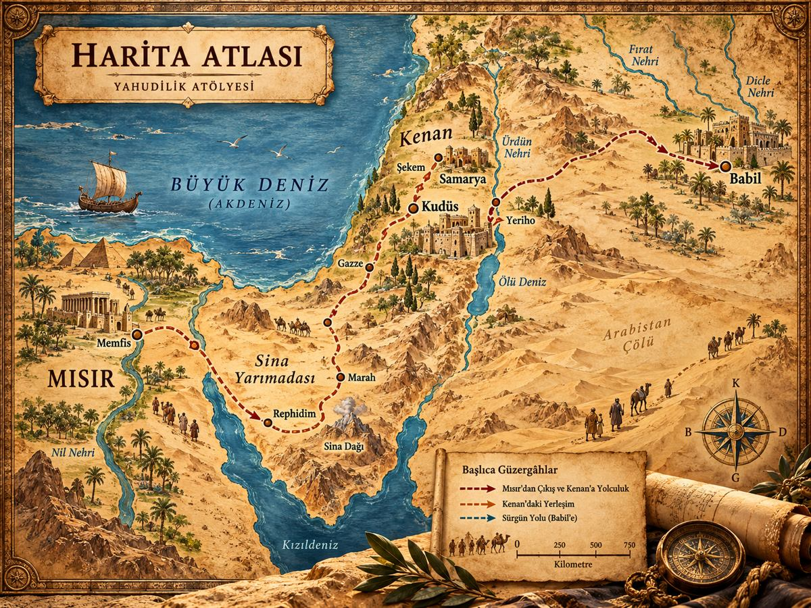

<!DOCTYPE html>
<html lang="tr"><head><meta charset="utf-8"/><meta content="width=device-width,initial-scale=1" name="viewport"/><meta content="#0b1930" name="theme-color"/><title>Yahudilik Atölyesi | Tahir AI Lab</title><style>
:root{--navy:#0b1930;--gold:#d6ad60;--emerald:#087f68;--bg:#f8f6f0;--ink:#192e47;--muted:#65778a;--line:#e5e8eb;--shadow:0 15px 46px #13274213}*{box-sizing:border-box}html{scroll-behavior:smooth}body{margin:0;background:var(--bg);color:var(--ink);font:15px/1.7 system-ui,-apple-system,'Segoe UI',sans-serif}button,input,select{font:inherit}button{cursor:pointer}button:focus-visible,input:focus-visible{outline:3px solid var(--gold);outline-offset:3px}.app{display:flex;min-height:100vh;flex-direction:row-reverse}.sidebar{position:sticky;top:0;align-self:flex-start;width:240px;flex:0 0 240px;background:linear-gradient(150deg,#132b48,#07162b);color:#f2f6fb;height:100vh;overflow:auto;padding:28px 16px;z-index:20}.brand{display:flex;align-items:center;gap:11px;padding:7px 10px 25px;font-size:21px;font-weight:850;line-height:1.15}.brand small{display:block;font-size:9px;letter-spacing:2px;color:#c9b68e;margin-top:8px}.brand-mark{height:47px;width:47px;display:grid;place-items:center;flex-shrink:0;border-radius:14px;color:#f9d994;font-size:31px;background:#ffffff17}.nav-label{font-size:10px;letter-spacing:2.1px;color:#a9b7c8;margin:18px 13px 9px}.nav-item{width:100%;display:flex;align-items:center;gap:11px;background:transparent;border:0;color:#c8d3df;border-radius:12px;padding:12px 14px;text-align:left;margin:4px 0;font-weight:650}.nav-item:hover,.nav-item.active{background:#ffffff19;color:#fff}.nav-item.active{box-shadow:inset 3px 0 var(--gold)}.side-quote{padding:15px;margin-top:32px;border:1px solid #ffffff24;border-radius:14px;font:italic 13px Georgia,serif;color:#ccd5dc}.side-quote small{display:block;margin-top:15px;font:10px system-ui;letter-spacing:2px;color:var(--gold)}.main{min-width:0;flex:1;padding:22px clamp(16px,3.4vw,55px) 70px;max-width:1800px;margin:auto}.topbar{height:61px;display:flex;align-items:center;gap:16px;margin-bottom:23px}.search-wrap{max-width:620px;width:100%;position:relative}.search-wrap input{background:white;border:1px solid var(--line);border-radius:13px;width:100%;padding:13px 18px 13px 45px;box-shadow:0 4px 14px #1231}.search-icon{position:absolute;left:16px;top:11px;color:#64748b}.mtb{margin-left:auto;min-width:46px;height:43px;display:grid;place-items:center;background:#e5e9e8;border-radius:14px;color:var(--navy);font-weight:900}.hero{border-radius:23px;background:linear-gradient(110deg,#112c4e 5%,#194565 70%,#165c63);color:white;display:flex;min-height:300px;overflow:hidden;position:relative;box-shadow:var(--shadow);isolation:isolate}.hero-content{position:relative;z-index:2;padding:46px clamp(25px,4vw,65px);max-width:70%}.eyebrow{font-size:11px;letter-spacing:2px;font-weight:750;color:#edc77f}.hero h1{font:700 clamp(31px,3.5vw,53px)/1.14 Georgia,serif;margin:13px 0}.hero p{color:#dce8ef;max-width:600px;font-size:15px}.hero-art{position:absolute;right:3%;top:7%;width:32%;height:92%;opacity:.85;display:grid;place-items:center;color:#ffe5a8;font-size:clamp(100px,16vw,215px);text-shadow:0 12px 35px #0005}.hero-art:after{content:'';position:absolute;width:86%;height:58%;border:3px solid #ffe8ab4d;border-radius:100% 100% 12px 12px;bottom:-7%;background:linear-gradient(0deg,#06223b44,transparent);z-index:-1}.btn{display:inline-flex;align-items:center;gap:9px;border:0;border-radius:10px;padding:11px 16px;background:var(--gold);color:#19293a;font-weight:800}.btn:hover{filter:brightness(.96)}.btn.soft{background:#edf2f5;color:var(--ink)}.btn.outline{border:1px solid #ffffff65;background:#ffffff15;color:white}.btn.small{font-size:12px;padding:8px 12px}.hero-actions{display:flex;flex-wrap:wrap;gap:11px;margin-top:22px}.section-title{display:flex;justify-content:space-between;align-items:center;gap:12px;margin:29px 0 17px}.section-title h2{font:700 25px Georgia;margin:0}.section-title p{font-size:12px;color:var(--muted)}.modules{display:grid;grid-template-columns:repeat(3,minmax(0,1fr));gap:16px}.module-card{position:relative;min-height:166px;text-align:left;border:0;border-radius:18px;padding:23px 21px;overflow:hidden;color:var(--navy);transition:transform .2s;box-shadow:0 6px 22px #1d32570e}.module-card:hover{transform:translateY(-4px)}.module-card h3{font-size:18px;position:relative;margin:11px 0 3px}.module-card p{font-size:12px;line-height:1.5;position:relative;margin:0;max-width:85%}.module-icon{font-size:25px}.module-index{position:absolute;right:20px;top:14px;opacity:.38;font-weight:900}.module-arrow{position:absolute;right:17px;bottom:15px;font-size:21px}.module-ornament{position:absolute;right:35px;top:36px;font-size:70px;opacity:.08}.blue{background:#dfeafb}.gold{background:#f7e9c7}.mint{background:#daf0e6}.sky{background:#deedf6}.coral{background:#f7e4da}.lilac{background:#eee5f9}.dashboard-grid{display:grid;grid-template-columns:1fr 1fr;gap:18px;margin-top:19px}.panel,.tile{background:#fff;border:1px solid #e8eaec;border-radius:18px;padding:22px;box-shadow:var(--shadow)}.panel-heading{display:flex;align-items:center;justify-content:space-between;gap:10px}.panel h3{margin:0;font-size:16px}.featured{display:flex;gap:16px;align-items:center;margin-top:19px}.featured-illustration{background:linear-gradient(145deg,#cae2e8,#a7bcbe);width:36%;min-height:150px;border-radius:12px;display:grid;place-items:center;font-size:65px;color:#0c5771}.featured h4{font-size:18px;margin:8px 0}.muted,.meta{color:var(--muted);font-size:12px}.chip,.tag{display:inline-block;background:#eff6f5;color:#087f68;padding:4px 10px;border-radius:30px;font-size:11px;font-weight:800}.grid-3{display:grid;grid-template-columns:repeat(3,minmax(0,1fr));gap:16px}.tile h3{margin:13px 0 7px;line-height:1.35}.tile p{font-size:13px;color:#56687b}.tile footer{display:flex;justify-content:space-between;align-items:center;gap:8px;margin-top:14px}.page-heading{margin-bottom:24px}.page-heading h1{font:700 clamp(27px,3vw,42px) Georgia;margin:0}.page-heading p{color:var(--muted);margin:7px 0}.toolbar{display:flex;gap:10px;align-items:center;flex-wrap:wrap}.progress{background:#e4edf0;height:8px;border-radius:20px;overflow:hidden}.progress>span{display:block;background:var(--emerald);height:100%;transition:width .3s}.lesson-layout{display:grid;grid-template-columns:minmax(0,2.4fr) minmax(220px,1fr);gap:20px}.lesson-content p{line-height:1.95;margin:16px 0;color:#334759}.lesson-aside{position:sticky;top:25px;height:max-content}.source-block{background:#f5f9f8;border-left:4px solid var(--emerald);padding:13px;border-radius:10px;font-size:13px;margin:15px 0}.study-filter{display:flex;gap:10px;flex-wrap:wrap;margin-bottom:20px}.study-filter button,.round-btn{border:1px solid var(--line);background:white;border-radius:11px;padding:8px 13px}.study-filter button.selected{background:var(--navy);color:#fff}.flash-wrap{max-width:620px;margin:20px auto}.flashcard{width:100%;height:300px;position:relative;perspective:1000px;border:0;background:transparent;text-align:center}.flash-inner{display:block;position:relative;width:100%;height:100%;transform-style:preserve-3d;transition:transform .55s}.flashcard.flipped .flash-inner{transform:rotateY(180deg)}.flash-face{position:absolute;inset:0;backface-visibility:hidden;border-radius:25px;padding:35px;display:flex;flex-direction:column;justify-content:center;align-items:center;box-shadow:var(--shadow);background:linear-gradient(145deg,#e5eefa,#c7dbf0);color:var(--navy)}.flash-face.back{transform:rotateY(180deg);background:linear-gradient(145deg,#fff3dc,#e9dcc2)}.flash-face h2{font:700 35px Georgia}.flash-face p{max-width:460px}.compare-view{display:grid;grid-template-columns:1fr 70px 1fr;align-items:center;gap:12px}.compare-lane{min-height:220px;border-radius:17px;padding:28px;background:#e9f2fa}.compare-lane:last-child{background:#f7eddb}.versus{text-align:center;font-weight:900;color:var(--gold);font-size:24px}.quiz-answers{display:grid;grid-template-columns:1fr 1fr;gap:11px;margin-top:22px}.quiz-answers button{border:1px solid #d9e2e9;background:#f7fafc;padding:15px;text-align:left;border-radius:11px}.quiz-answers button.correct{background:#d9f1e6;border-color:#43aa81}.quiz-answers button.wrong{background:#fee4e4;border-color:#e67b7b}.timeline{border-left:3px solid #d7b677;margin-left:15px;padding-left:25px}.timeline-item{position:relative;margin-bottom:18px}.timeline-item:before{content:'';position:absolute;left:-35px;top:21px;border-radius:50%;width:15px;height:15px;background:#d6ad60;box-shadow:0 0 0 4px #f7eace}.atlas-map{background:linear-gradient(135deg,#e8ead8,#b2d1ce);border-radius:20px;min-height:320px;position:relative;overflow:hidden;padding:26px}.atlas-map:before{content:'≈ ≈ ≈ ≈ ≈';position:absolute;inset:0;color:#579ac988;font-size:75px;word-spacing:100px;transform:rotate(-25deg)}.map-route{position:relative;z-index:1;display:flex;flex-direction:column;gap:12px;max-width:300px}.map-stop{background:#fffef3dd;border:1px solid #759b8c;padding:8px 14px;border-radius:30px;font-weight:800}.atlas-note{position:relative;z-index:1;margin-top:12px;font-size:12px}.site-grid{display:grid;grid-template-columns:repeat(3,1fr);gap:12px}.site{background:#fff;border:1px solid var(--line);border-radius:15px;padding:17px;text-align:left}.site-icon{display:block;font-size:35px}.modal{position:fixed;inset:0;background:#0817298a;z-index:50;display:none;align-items:center;justify-content:center;padding:18px}.modal.open{display:flex}.modal-panel{background:white;border-radius:19px;max-width:700px;max-height:85vh;overflow:auto;padding:27px;width:100%}.mobile-menu{display:none}.backdrop{display:none}.hide{display:none!important}.print-only{display:none}select{padding:10px;border:1px solid var(--line);border-radius:11px;background:white}@media(max-width:1150px){.modules,.grid-3{grid-template-columns:repeat(2,minmax(0,1fr))}.sidebar{width:220px;flex-basis:220px}.main{padding:20px}}@media(max-width:850px){.app{display:block}.sidebar{position:fixed;right:0;left:auto;top:0;transform:translateX(110%);transition:transform .28s;width:min(300px,85vw);height:100dvh;z-index:80}.sidebar.open{transform:translateX(0)}.backdrop.open{display:block;position:fixed;inset:0;background:#051426a8;z-index:79}.mobile-menu{display:inline-grid;border:1px solid var(--line);background:#fff;border-radius:12px;padding:10px;place-items:center}.main{padding:15px 17px 55px}.hero-content{max-width:79%}.hero-art{opacity:.4}}@media(max-width:580px){.hero{min-height:290px}.hero-content{max-width:100%;padding:30px 24px}.hero-art{opacity:.18;right:-60px;font-size:170px}.modules,.grid-3,.dashboard-grid,.lesson-layout,.quiz-answers,.site-grid{grid-template-columns:1fr}.module-card{min-height:135px}.compare-view{grid-template-columns:1fr;gap:7px}.versus{line-height:1}.featured{align-items:flex-start}.topbar{margin-bottom:13px}.panel{padding:17px}.lesson-aside{position:static}}@media(prefers-reduced-motion:reduce){*,*:before,*:after{scroll-behavior:auto!important;transition:none!important;animation:none!important}}@media print{.sidebar,.topbar,.no-print,.hero-actions{display:none!important}.main{padding:0}.panel{box-shadow:none}.print-only{display:block}}

.ref-full{margin-top:18px;background:#f8fafc;border:1px solid #e0e8f1;padding:14px 18px;border-radius:14px}.ref-full summary{font-weight:800;color:#235a91;cursor:pointer}.ref-full p{line-height:1.9;overflow-wrap:anywhere}
/* Hristiyanlık Atölyesi ders ekranındaki görsel hiyerarşiye uyarlanmış yerleşim */
.screenshot-lesson{grid-template-columns:minmax(0,1fr) 282px;gap:22px;align-items:start}.screenshot-lesson .lesson-content{min-width:0}.ref-intro,.ref-section,.ref-guide{background:white;border:1px solid #e1eaf6;border-radius:22px;box-shadow:0 12px 32px #182e4410}.ref-intro{padding:23px;display:grid;grid-template-columns:minmax(0,1.45fr) minmax(250px,1fr);gap:26px;background:#f6f9fd}.ref-intro-copy{padding:2px 0}.ref-pill{display:inline-block;border-radius:22px;background:#e7f0ff;color:#2d6aaf;font-size:12px;font-weight:800;padding:5px 13px}.ref-intro-copy>p{font-size:18px;line-height:1.95;color:#5d7393;margin:15px 0 0;overflow-wrap:anywhere}.ref-goal{background:#fff7ea;border:1px solid #f5dba7;border-radius:19px;padding:19px 21px;align-self:start}.ref-goal h3{margin:0 0 3px;font-size:19px;color:#192f50}.ref-goal p{margin:0;font-size:14px;line-height:1.85;color:#627691}.ref-section{padding:23px;margin-top:21px}.ref-section-head{display:flex;justify-content:space-between;align-items:center;gap:12px;margin-bottom:15px}.ref-section-head h2{margin:0;color:#1a3156;font:500 clamp(25px,2.3vw,32px) Georgia,serif}.ref-points{display:grid;grid-template-columns:repeat(2,minmax(0,1fr));gap:14px}.ref-point{display:flex;gap:14px;align-items:flex-start;border:1px solid #eee0ce;border-radius:20px;padding:18px 20px;min-height:150px;background:linear-gradient(145deg,#fcf9f4,#fff);box-shadow:0 6px 15px #12243a07}.ref-number{flex:none;width:38px;height:38px;border-radius:12px;display:grid;place-items:center;background:linear-gradient(135deg,#dec088,#b7883c);color:white;font-size:20px}.ref-point-title{font-weight:800;color:#193255}.ref-point p{margin:5px 0 0;font-size:14px;line-height:1.85;color:#5e7391;overflow-wrap:anywhere}.ref-blue,.ref-discuss,.ref-reinforce{padding:18px 22px;border-radius:19px;font-size:16px;line-height:1.9;color:#2b4263}.ref-blue{border:1px solid #dce9fa;background:#f7fbff}.ref-discuss{background:#fffaf6;border:1px solid #f2ddc6}.ref-discuss p,.ref-reinforce p{margin:0}.ref-discuss strong{display:block;color:#193252}.ref-reinforce{background:#f7fcf8;border:1px solid #dcefdc}.ref-reinforce .toolbar{margin-top:15px}.ref-reinforce .btn{background:#2164a3;color:white}.ref-reinforce .btn.soft{background:white;border:1px solid #e5d8c4;color:#1a3156}.ref-bottom{display:flex;justify-content:space-between;margin:23px 0}.ref-bottom .btn{background:white;border:1px solid #e9dfd0;color:#1a3156}.ref-source{font-size:12px;color:#76869b;margin:10px 3px 30px}.screenshot-lesson .lesson-aside{position:sticky;top:20px;display:block}.ref-guide{padding:23px}.ref-guide h3{font-size:20px;margin:0;color:#152c50}.ref-guide>p{margin:4px 0 17px;color:#6c82a1;font-size:13px}.ref-guide .progress{margin-bottom:23px;height:8px;background:#e8edf4}.ref-guide .progress>span{background:linear-gradient(90deg,#428fc7,#78c2c2)}.ref-guide-btn{display:block;width:100%;margin:10px 0;background:#fff;border:1px solid #e5d7c5;padding:16px 10px;border-radius:13px;font-weight:850;color:#173052;text-align:center}.ref-guide-btn:hover{background:#f7f9fd;border-color:#b9cbe2}.ref-guide-note{background:#fff7e9;border:1px solid #f3daab;border-radius:13px;color:#95703e;line-height:1.8;padding:16px;margin-top:20px;font-size:12px}@media(max-width:1120px){.screenshot-lesson{grid-template-columns:minmax(0,1fr) 238px}.ref-intro{grid-template-columns:1fr}.ref-intro-copy>p{font-size:16px}}@media(max-width:850px){.screenshot-lesson{grid-template-columns:1fr}.screenshot-lesson .lesson-aside{position:static}.ref-guide{padding:18px}}@media(max-width:600px){.ref-points{grid-template-columns:1fr}.ref-intro,.ref-section{padding:16px;border-radius:17px}.ref-point{min-height:auto;padding:14px}.ref-intro-copy>p{font-size:15px}.ref-section-head h2{font-size:25px}.ref-section-head .ref-pill{font-size:10px}.ref-blue,.ref-discuss,.ref-reinforce{font-size:14px}}


/* 2026-10-30 • Canlı öğrenme görünümü – diğer modülleri değiştirmeyen katman */
:root{--gold:#d2a452;--emerald:#087f68}
.sidebar{background:linear-gradient(158deg,#193b62 0%,#112b4b 45%,#091b33 100%);border-left:2px solid #cfac64;box-shadow:-10px 0 36px #071a3030}
.brand{gap:8px;padding-left:7px;padding-right:3px}
.brand>span:last-child{min-width:0;font-size:20px;letter-spacing:-.4px}
.brand-tagline{white-space:nowrap!important;letter-spacing:.65px!important;font-size:8.4px!important;color:#f1ce8c!important;display:block!important}
.brand-mark{background:linear-gradient(135deg,#f9e7b9,#c79742);color:#123155;box-shadow:0 5px 18px #d9b36333}
.nav-label{color:#efd29e;font-weight:850}
.nav-item{color:#e2eafa;border:1px solid transparent;transition:background .18s,transform .18s,border-color .18s}
.nav-item:hover{background:#ffffff20;border-color:#ffffff36;transform:translateX(-3px)}
.nav-item.active{background:linear-gradient(100deg,#1d6680,#2b557a);border-color:#dabb764f;box-shadow:inset -4px 0 #e8c16b,0 7px 20px #00000022;color:#fff}
.side-quote{background:#ffffff0d;border:1px solid #ffffff19;border-radius:15px}
.mtb{background:linear-gradient(135deg,#e2af57,#187c78)!important;color:#fff!important;box-shadow:0 5px 18px #14665d33;border:2px solid #fff;font-weight:950;letter-spacing:.5px}
.ref-intro{background:linear-gradient(120deg,#eaf3ff,#f8fbff)!important;border-color:#cbdff8!important}
.ref-goal{background:linear-gradient(145deg,#fff2d6,#fff9ed)!important;border:1px solid #eccb87!important}
.ref-section{border-color:#dce6f1!important;box-shadow:0 13px 28px #0d2e5110!important}
.ref-section:nth-of-type(2){background:linear-gradient(135deg,#ffffff,#fff9ed)}
.ref-section:nth-of-type(3){background:linear-gradient(135deg,#ffffff,#f0f7ff)}
.ref-section:nth-of-type(4){background:linear-gradient(135deg,#ffffff,#fff3ed)}
.ref-section:nth-of-type(5){background:linear-gradient(135deg,#ffffff,#effbf3)}
.ref-point{background:linear-gradient(135deg,#fff8e5,#fff)!important;border:1px solid #e9cf9c!important;min-height:145px}
.ref-point:nth-child(2){background:linear-gradient(135deg,#e8f5ff,#fff)!important;border-color:#b8dbf5!important}
.ref-point:nth-child(3){background:linear-gradient(135deg,#e8f8ef,#fff)!important;border-color:#bde4ce!important}
.ref-point:nth-child(4){background:linear-gradient(135deg,#f3eafd,#fff)!important;border-color:#dfc9f3!important}
.ref-point:nth-child(2) .ref-number{background:linear-gradient(135deg,#308cc6,#155687)}
.ref-point:nth-child(3) .ref-number{background:linear-gradient(135deg,#36a583,#087f68)}
.ref-point:nth-child(4) .ref-number{background:linear-gradient(135deg,#9165b4,#64448e)}
.ref-blue{background:linear-gradient(110deg,#e6f2ff,#f6faff)!important;border:1px solid #b9d9fc!important}
.ref-discuss{background:linear-gradient(110deg,#fff0e4,#fffaf6)!important;border:1px solid #f3c7a2!important}
.ref-reinforce{background:linear-gradient(110deg,#e6f7eb,#f6fff9)!important;border:1px solid #b6e0c4!important}
.ref-pill{background:#dcecff!important;color:#1d568f!important}
.ref-guide{background:linear-gradient(145deg,#ffffff,#f3f8ff)!important;border-color:#d4e3f5!important}
.ref-guide-btn{transition:background .2s,transform .2s}.ref-guide-btn:hover{background:#e7f4ff;transform:translateY(-2px)}
.grid-3>.tile[data-text]{position:relative;overflow:hidden;min-height:215px;border:1px solid #bcd9f4!important;background:linear-gradient(145deg,#eaf4ff 0%,#ffffff 70%)!important;box-shadow:0 12px 26px #0c34551a}
.grid-3>.tile[data-text]:nth-child(3n + 2){background:linear-gradient(145deg,#fff0d6,#fff 70%)!important;border-color:#efd4a0!important}
.grid-3>.tile[data-text]:nth-child(3n + 3){background:linear-gradient(145deg,#e5f7ed,#fff 70%)!important;border-color:#b8e6ca!important}
.grid-3>.tile[data-text]:before{content:'✡';position:absolute;top:12px;right:15px;font-size:44px;line-height:1;color:#c0a06325;pointer-events:none}
.grid-3>.tile[data-text] h3{position:relative;color:#183d66;font-size:22px}
.grid-3>.tile[data-text] b{color:#137c74}
.modules .module-card{box-shadow:0 10px 24px #18375c19;border:1px solid #ffffffd9;filter:saturate(1.18)}
.modules .module-card:hover{transform:translateY(-4px);filter:saturate(1.3)}
.scripture-study{display:grid;gap:15px;margin-top:14px}
.scripture-study-lead{color:#52729a;font-size:13px;font-weight:750}
.scripture-study section{padding:20px 23px;border-radius:18px;border:1px solid #c8dff5;background:linear-gradient(125deg,#edf5ff,#fff)}
.scripture-study section:nth-of-type(2){background:linear-gradient(125deg,#fff3dc,#fff);border-color:#edd4a4}
.scripture-study section:nth-of-type(3){background:linear-gradient(125deg,#eaf8ef,#fff);border-color:#bde0c8}
.scripture-study section h3{margin:0 0 9px;color:#16365b;font-size:18px}
.scripture-study section p{margin:0;line-height:1.9;color:#40536a}
.scripture-cover{width:100%;height:132px;object-fit:cover;border-radius:16px;margin:0 0 12px;display:block;box-shadow:0 10px 24px rgba(9,29,54,.14)}
.scripture-tile{padding:12px !important}
.scripture-tile .scripture-cover{height:118px;margin-bottom:10px}
.scripture-tile h3{margin-top:2px}
.timeline-hero{display:grid;grid-template-columns:1.05fr 1fr;gap:18px;align-items:center;margin-bottom:18px;overflow:hidden}
.timeline-hero img{width:100%;height:230px;object-fit:cover;border-radius:18px;box-shadow:0 12px 28px rgba(14,35,61,.18)}
.timeline-hero-copy h2{margin:0 0 8px;color:#16365b;font:700 28px Georgia,serif}
.timeline-hero-copy p{margin:0 0 12px;line-height:1.8;color:#48627f}
.timeline-hero-copy .tag{margin-bottom:8px}
@media(max-width:900px){.timeline-hero{grid-template-columns:1fr}.timeline-hero img{height:210px}}
@media(max-width:700px){.brand-tagline{font-size:8px!important}.ref-point{min-height:unset}.scripture-study section{padding:15px}}

</style><style id="upgrade-styles">
.lesson-layout{grid-template-columns:minmax(0,1fr) 282px;align-items:start}.lesson-content{min-width:0}.lesson-banner{background:linear-gradient(120deg,#112846,#175263);color:#fff;border-radius:20px;display:flex;align-items:center;justify-content:space-between;padding:31px;overflow:hidden;margin-bottom:18px}.lesson-banner h2{font:700 clamp(24px,2.5vw,34px) Georgia;margin:9px 0}.lesson-banner p{color:#d7e5ed;max-width:600px}.lesson-kicker{color:#ebc87d;font-size:11px;font-weight:850;letter-spacing:1.5px}.lesson-banner-symbol{font-size:100px;opacity:.3}.learning-objectives{margin-bottom:23px}.eyebrow-dark{font-size:11px;letter-spacing:1.2px;color:#087f68;font-weight:850}.objective-items{display:flex;gap:10px;flex-wrap:wrap;margin-top:14px}.objective-items span{background:#eff7f4;padding:9px 12px;border-radius:9px;font-size:12px;font-weight:700}.lesson-section-title{display:flex;justify-content:space-between;align-items:center;margin:20px 0 13px}.lesson-section-title h3{font:700 24px Georgia;margin:0}.lesson-section-title span{font-size:12px;color:#738496}.lesson-study-card{background:#fff;border:1px solid #e6eaf0;border-left:5px solid #68b6a0;border-radius:16px;padding:23px 25px;margin-bottom:15px;box-shadow:0 7px 28px #1c35550a}.lesson-study-card.gold-accent{border-left-color:#d6ad60}.lesson-study-card.blue-accent{border-left-color:#6c9fc9}.lesson-study-card.lilac-accent{border-left-color:#aa8fce}.lesson-study-card header{display:flex;gap:14px;align-items:center;border-bottom:1px solid #edf0f2;padding-bottom:12px}.lesson-step{width:44px;height:44px;border-radius:13px;background:#eef6f4;color:#087f68;display:grid;place-items:center;font-weight:900;flex-shrink:0}.lesson-study-card header small{font-size:10px;color:#8996a8;font-weight:800;letter-spacing:1.3px}.lesson-study-card h3{margin:0;font:700 21px Georgia}.lesson-study-text p{line-height:1.85;margin:15px 0;color:#344c62}.reflection-card{background:linear-gradient(110deg,#f7eed7,#f6f9f5);border:1px solid #ead8ae;border-radius:16px;padding:23px;display:flex;justify-content:space-between;align-items:center;gap:15px}.reflection-card h3{margin:0 0 7px}.reflection-card p{margin:0;font-size:13px}.lesson-bottom{margin:25px 0}.guide-panel{background:#fff}.guide-icon{background:#e6f2ed;color:#087f68;width:44px;height:44px;border-radius:13px;display:grid;place-items:center;font-size:23px}.guide-panel>h3{font:700 23px Georgia;margin:14px 0 4px}.guide-panel>p{font-size:13px;color:#69798a}.guide-progress{display:flex;justify-content:space-between;font-size:11px;margin:14px 0 7px}.guide-progress strong{color:#087f68}.guide-link{width:100%;display:flex;text-align:left;gap:11px;align-items:center;background:#f6f8fa;border:1px solid #e8edf0;border-radius:12px;padding:12px;margin-top:11px;color:#233a51}.guide-link>span:first-child{font-size:21px;color:#087f68}.guide-link>span:nth-child(2){flex:1;display:flex;flex-direction:column}.guide-link small{color:#77889b;font-size:10px}.guide-link b{color:#6d8194}.guide-link:hover{background:#eaf5f0}.source-guide{margin-top:15px;font-size:12px;color:#617287}.source-guide p{line-height:1.7}.explorer-grid .panel{min-width:0}.home-feature,.home-sites,.home-quiz,.home-compare{min-height:260px}.round-btn{padding:4px 11px;font-size:20px}.featured-illustration{flex:0 0 34%;display:flex;flex-direction:column;gap:3px;background:linear-gradient(140deg,#dbe8e9,#7cafa8);min-height:175px}.featured-illustration span{font-size:76px}.featured-illustration small{font-size:9px;letter-spacing:1px}.site-strip{display:grid;grid-template-columns:repeat(5,minmax(0,1fr));gap:8px;margin-top:20px}.site-preview{background:#fafbfd;border:1px solid #e8ecf0;border-radius:12px;min-width:0;padding:8px;display:flex;flex-direction:column;align-items:center;gap:5px;text-align:center}.site-thumb{height:73px;display:grid;place-items:center;width:100%;border-radius:9px;background:linear-gradient(145deg,#d7e9e6,#f9e9c5);font-size:38px;color:#436e6d}.site-preview strong{font-size:11px;line-height:1.25;overflow-wrap:anywhere}.site-preview small{font-size:10px;color:#798da0}.mini-quiz-body{display:grid;grid-template-columns:minmax(0,1fr) 120px;gap:20px;margin-top:18px}.mini-quiz-body h4{font-size:15px}.mini-options{display:grid;grid-template-columns:1fr 1fr;gap:8px}.mini-opt{border:1px solid #e2e8ee;border-radius:9px;background:#f6f8fb;text-align:left;padding:9px;font-size:11px}.mini-opt.correct{background:#d5f1e0;border-color:#58ab80}.mini-opt.wrong{background:#fbdcdd;border-color:#d77}.mini-quiz-art{background:linear-gradient(#d7e5ee,#aec8d5);border-radius:18px;display:grid;place-items:center;font-size:75px;color:#6287a2}.home-compare-view{display:grid;grid-template-columns:minmax(0,1fr) 44px minmax(0,1fr);align-items:center;gap:9px;margin-top:20px}.home-compare-view article{background:linear-gradient(140deg,#edf5fd,#d8e8f4);padding:22px;border-radius:16px;min-height:180px}.home-compare-view article:last-child{background:linear-gradient(140deg,#fff5e7,#f4e2c6)}.home-compare-view h4{margin:12px 0 5px;font:700 21px Georgia}.home-compare-view p{font-size:12px;color:#586b7e}.compare-vs{font-weight:900;color:#a88a4d;text-align:center}.flashcard{display:block}.flash-inner{display:block}.flash-face{display:flex}.flashcard.flipped .flash-inner{transform:rotateY(180deg)}@media(max-width:1200px){.site-strip{grid-template-columns:repeat(3,1fr)}}@media(max-width:1050px){.lesson-layout{grid-template-columns:1fr}.lesson-aside{position:static;display:grid;grid-template-columns:1fr 1fr;gap:12px}.source-guide{margin:0}}@media(max-width:700px){.lesson-banner{padding:22px}.lesson-banner-symbol{font-size:56px}.lesson-study-card{padding:18px}.lesson-aside{display:block}.source-guide{margin-top:15px}.reflection-card{display:block}.reflection-card button{margin-top:12px}.site-strip{grid-template-columns:repeat(3,1fr)}.mini-quiz-body{grid-template-columns:1fr}.mini-quiz-art{display:none}.home-compare-view{grid-template-columns:1fr 34px 1fr}.home-compare-view article{padding:12px}.home-compare-view h4{font-size:16px}.lesson-bottom{flex-wrap:wrap}}
</style><style id="atlas-premium-styles">.atlas-intro{padding:25px}.historic-map{background:#e9d8ac;border:1px solid #d7c79f;border-radius:17px;overflow:hidden;margin-top:18px;box-shadow:inset 0 0 27px #625b321a}.historic-map svg{display:block;width:100%;height:auto}.atlas-legend{display:flex;gap:16px;flex-wrap:wrap;font-size:11px;color:#65798a;margin-top:12px}.atlas-legend span{display:flex;gap:7px;align-items:center}.atlas-legend i{width:12px;height:12px;display:inline-block;border-radius:50%}.enhanced-sites .site{box-shadow:0 10px 30px #143e5511;transition:transform .2s;text-align:left}.enhanced-sites .site:hover{transform:translateY(-4px)}.enhanced-sites .site-icon{background:linear-gradient(140deg,#d9ede6,#f5e8c6);border-radius:11px;height:88px;display:grid;place-items:center;color:#175368}.enhanced-sites .site-more{display:block;font-weight:750;color:#087f68;font-size:12px;margin-top:12px}.modal-panel:has(.historic-map){max-width:1100px}@media(max-width:650px){.atlas-intro{padding:14px}.historic-map svg{min-width:600px}.historic-map{overflow-x:auto}.enhanced-sites{grid-template-columns:1fr 1fr}}</style><style id="yahudilik-image-integration">
.hero{background-image:linear-gradient(90deg,rgba(9,29,53,.94) 0%,rgba(9,29,53,.82) 38%,rgba(9,29,53,.13) 82%),url("./assets/ana-kapak.jpg");background-position:center;background-size:cover;background-repeat:no-repeat}.hero-art{display:none!important}.hero-content{max-width:70%}.featured-illustration{background-image:url("./assets/one-cikan.jpg")!important;background-position:center;background-size:cover;color:transparent!important;overflow:hidden}.featured-illustration>*{visibility:hidden}.mini-quiz-art{background-image:url("./assets/bilgi-soleni.jpg")!important;background-size:cover;background-position:center;color:transparent!important;min-height:190px;border-radius:15px}.yah-image-panel{width:100%;height:220px;object-fit:cover;border-radius:18px;display:block;margin-bottom:20px}.yah-atlas-cover{width:100%;max-height:530px;object-fit:contain;background:#eee0bb;border-radius:16px;margin:14px 0}.yah-back{margin:0 0 16px!important;background:#fff!important;border:1px solid #d8e4ed!important;color:#18375a!important}.yah-back:hover{background:#eaf2f8!important}.yah-full-btn{margin:15px 0}.yah-modal-copy p{font-size:15px;line-height:1.9;color:#334b61}.yah-modal-copy{padding:8px 2px}.yah-modal-copy h3{font:700 23px Georgia;color:#122b4d}.modal-panel{max-width:850px!important}.yah-image-legend{font-size:12px;color:#6c7182;margin:0 0 18px}@media(max-width:700px){.hero-content{max-width:100%;padding:31px 22px}.hero{background-position:60% center}.yah-image-panel{height:160px}}
</style><style id="premium-academic-2026">
/* TAHIR AI LAB — Modern Akademik Premium design override, rev 2026-10-30 */
:root{--navy:#0b1930;--gold:#c49a50;--emerald:#087f68;--bg:#f8f6f0;--ink:#192e47;--line:#e3e9ef;--shadow:0 10px 28px rgba(12,35,61,.085)}
body{background:radial-gradient(ellipse at 10% 0%,#eef4fa 0%,transparent 40%),#f8f6f0;color:#192e47}
.sidebar{background:linear-gradient(160deg,#102541 0%,#0b1930 62%,#07162a 100%)!important;border-left:1px solid #c49a5030;box-shadow:-12px 0 28px rgba(9,25,45,.12);scrollbar-width:thin;scrollbar-color:#3b536d transparent}
.brand{gap:8px!important;padding-inline:4px!important;font-size:19px!important;letter-spacing:-.35px}
.brand>span:last-child{min-width:0;flex:1}
.brand-mark{background:#203654!important;color:#ebc77c!important;border:1px solid #c49a5048;box-shadow:0 5px 18px #0002}
.brand small,.brand-tagline{letter-spacing:.45px!important;font-size:9px!important;white-space:nowrap!important;color:#dbbb7c!important;font-weight:750;line-height:1.5}
.nav-label{color:#d9ba7c!important;font-weight:850;letter-spacing:1.6px}
.nav-item{color:#d5deeb!important;border:1px solid transparent!important;transition:background .2s,border-color .2s,transform .2s!important;border-radius:12px!important}
.nav-item:hover{background:#ffffff15!important;border-color:#ffffff25!important;transform:translateX(-2px)}
.nav-item.active{background:#26507b!important;border-color:#5075a0!important;color:white!important;box-shadow:inset 3px 0 #e6c27e,0 4px 12px #0002!important}
.side-quote{border-color:#c49a5055!important;background:#ffffff08;color:#d7e2f0!important}
.topbar{gap:14px}.search-wrap input{border:1px solid #dae4ec!important;background:#ffffffeb!important;box-shadow:0 6px 24px #1d38500c!important}
.top-right,.mtb{font-weight:850}
.mtb-badge,.mtb-only,.mtb{background:linear-gradient(130deg,#e8c782,#b78339)!important;color:#0b1930!important;border:1px solid #d7ac5c!important;box-shadow:0 5px 15px #7e61202e}
.section-title h2,.page-heading h1{color:#12294a}
.panel,.tile,.ref-section,.ref-guide{border:1px solid #e3e9f0!important;box-shadow:0 11px 27px rgba(11,32,58,.065)!important;background:#fff!important}
.panel,.tile,.ref-section{border-radius:20px!important}
.modules>*{transition:transform .19s,box-shadow .19s!important}
.modules>*:hover,.tile:hover{transform:translateY(-3px)!important;box-shadow:0 16px 30px rgba(18,47,75,.13)!important}
.hero{border-radius:24px!important;box-shadow:0 17px 42px #102b4933;overflow:hidden}
.hero h1{letter-spacing:-.6px;text-shadow:0 2px 15px #0003}
.ref-intro{background:linear-gradient(115deg,#edf4fd,#f9fbfd)!important;border:1px solid #dce8f4!important;border-radius:21px!important;box-shadow:0 7px 25px #2542630b!important}
.ref-goal{background:linear-gradient(145deg,#fff6e9,#fffaf3)!important;border-color:#edcf91!important}
.ref-pill{background:#e8f2fc!important;color:#24619f!important}
.ref-section{padding:clamp(18px,2vw,26px)!important;margin-bottom:18px!important}
.ref-section-head h2{color:#132b4e!important}
.ref-points{gap:15px!important}
.ref-point{transition:transform .2s,box-shadow .2s;border-radius:18px!important;box-shadow:0 5px 15px #23415b0a!important}
.ref-point:hover{transform:translateY(-2px);box-shadow:0 11px 22px #18395e15!important}
.ref-point:nth-child(4n + 1){background:linear-gradient(150deg,#eaf3fe,#f7faff)!important;border-color:#d1e4fb!important}
.ref-point:nth-child(4n + 2){background:linear-gradient(150deg,#e5f5ed,#f5fbf7)!important;border-color:#c6e9d9!important}
.ref-point:nth-child(4n + 3){background:linear-gradient(150deg,#fff0db,#fffbf3)!important;border-color:#f1dbb2!important}
.ref-point:nth-child(4n + 4){background:linear-gradient(150deg,#f0eafd,#faf8ff)!important;border-color:#dfd2f6!important}
.ref-point:nth-child(4n + 1) .ref-number{background:#275f9f!important;color:#fff!important}
.ref-point:nth-child(4n + 2) .ref-number{background:#087f68!important;color:#fff!important}
.ref-point:nth-child(4n + 3) .ref-number{background:#ba8737!important;color:#fff!important}
.ref-point:nth-child(4n + 4) .ref-number{background:#7857ad!important;color:#fff!important}
.ref-point:nth-child(4n + 1) .ref-point-title{color:#235e9e!important}
.ref-point:nth-child(4n + 2) .ref-point-title{color:#087f68!important}
.ref-point:nth-child(4n + 3) .ref-point-title{color:#9e6a23!important}
.ref-point:nth-child(4n + 4) .ref-point-title{color:#7351a8!important}
.ref-blue{background:linear-gradient(130deg,#e9f3fd,#f7fbff)!important;border:1px solid #cde0f7!important;border-left:5px solid #347ebd!important;border-radius:17px!important;color:#274c75!important}
.ref-discuss{background:linear-gradient(120deg,#ffefe4,#fff9f5)!important;border:1px solid #f1d4bb!important;border-left:5px solid #d8915c!important;border-radius:17px!important}
.ref-discuss strong{color:#a65c30!important}
.ref-reinforce{background:linear-gradient(130deg,#e6f5eb,#f7fbf8)!important;border:1px solid #cbe8d4!important;border-left:5px solid #087f68!important;border-radius:17px!important}
.ref-guide{border-radius:21px!important;overflow:hidden}
.ref-guide h3{color:#132b4e!important}
.ref-guide-btn{border:1px solid #d8e0e9!important;background:linear-gradient(125deg,#fff,#f7fafc)!important;transition:transform .18s,background .18s!important}
.ref-guide-btn:hover{transform:translateX(-2px);background:#eef5fb!important}
.ref-guide-note{background:#fff5e6!important;border-color:#edd5a6!important}
.yah-back{border-radius:12px!important;font-weight:750!important;box-shadow:0 4px 12px #17335110!important}
.yah-back:hover{background:#e7f1fc!important}
.yah-full-btn{background:#e6eff9!important;border:1px solid #bcd3ec!important;color:#174c81!important}
/* Elegant warm-paper reading modules, distinct ink treatments per sacred-text card */
#view .scripture-card:nth-child(4n+1),.scripture-grid>.tile:nth-child(4n+1){background:#f0f5ff!important;border-color:#cdddf6!important}
#view .scripture-card:nth-child(4n+2),.scripture-grid>.tile:nth-child(4n+2){background:#fff5e6!important;border-color:#efdab3!important}
#view .scripture-card:nth-child(4n+3),.scripture-grid>.tile:nth-child(4n+3){background:#ebf7f0!important;border-color:#cde9db!important}
#view .scripture-card:nth-child(4n+4),.scripture-grid>.tile:nth-child(4n+4){background:#f3edfc!important;border-color:#e0d5f0!important}
.yah-image-panel{box-shadow:0 12px 34px #122b4524!important;object-position:center 46%}
.ref-bottom .btn,.btn{border-radius:11px}
.btn:not(.soft):not(.outline){background:linear-gradient(125deg,#205f9d,#154b80);box-shadow:0 6px 16px #154b801b}
.btn:not(.soft):not(.outline):hover{filter:brightness(1.09)}
@media(max-width:900px){.brand{font-size:19px!important}.sidebar{box-shadow:-16px 0 26px #081b2a3a}.ref-points{gap:11px!important}}
@media(max-width:650px){.ref-section{padding:16px!important}.ref-point{padding:14px!important}.ref-intro{padding:16px!important}.hero{border-radius:19px!important}.ref-guide{border-radius:16px!important}}
@media(prefers-reduced-motion:reduce){.nav-item,.ref-point,.tile,.modules>*,.ref-guide-btn{transition:none!important;transform:none!important}}
</style><style id="kesif-atlasi-okunakli-2026">
/* Desktop: legible navigation, flexible vertical distribution and footer visible. */
@media (min-width:851px){
 .sidebar{display:flex!important;flex-direction:column!important;height:100vh!important;height:100dvh!important;overflow-y:auto!important;box-sizing:border-box;padding:clamp(12px,1.7vh,19px) 13px 12px!important}
 .sidebar .brand{flex:0 0 auto;gap:10px!important;padding:4px 3px clamp(9px,1.3vh,15px)!important}
 .sidebar .brand-mark{width:43px!important;height:43px!important;min-height:43px!important;font-size:27px!important;border-radius:12px!important}
 .sidebar .brand>span:last-child{font-size:20px!important;line-height:1.12!important}
 .sidebar .brand-tagline{font-size:9px!important;margin-top:6px!important;letter-spacing:.05px!important;white-space:nowrap!important}
 .sidebar .nav-label{flex:0 0 auto;margin:clamp(5px,.9vh,10px) 10px 6px!important;font-size:11px!important}
 .sidebar .nav-item{flex:1 1 auto;min-height:39px!important;max-height:59px!important;margin:2px 0!important;padding:clamp(8px,1.1vh,13px) 11px!important;font-size:clamp(13px,1.65vh,15px)!important;line-height:1.22!important;gap:10px!important;border-radius:11px!important}
 .sidebar .side-quote{flex:0 0 auto;margin-top:clamp(7px,1.3vh,14px)!important;padding:clamp(10px,1.3vh,14px)!important;font-size:clamp(11px,1.45vh,13px)!important;line-height:1.4!important;border-radius:12px!important}
 .sidebar .side-quote small{margin-top:7px!important;font-size:10px!important;letter-spacing:1.2px!important;font-style:normal!important;font-weight:750!important}
}
/* Keep readability, prioritize no clipped footer in shorter classrooms displays. */
@media (min-width:851px) and (max-height:710px){
 .sidebar{padding:9px 12px!important}
 .sidebar .brand{padding-bottom:6px!important}
 .sidebar .brand-mark{height:38px!important;min-height:38px!important;width:38px!important}
 .sidebar .nav-item{min-height:35px!important;padding:7px 10px!important;font-size:13px!important;margin:1px 0!important}
 .sidebar .side-quote{padding:9px 10px!important;font-size:11px!important;margin-top:6px!important}
}
@media(max-width:850px){.sidebar{height:100dvh!important;overflow-y:auto!important}}
</style>
</head><body><div class="backdrop" id="backdrop"></div><div class="app"><aside aria-label="Keşif Atlası" class="sidebar" id="sidebar"></aside><main class="main"><div class="topbar" id="topbar"></div><div id="content"></div></main></div><div aria-label="Bilgi penceresi" aria-modal="true" class="modal" id="modal" role="dialog"><div class="modal-panel" id="modalInner"></div></div><script>
const LESSONS=[{"id": "lesson1", "title": "Yahudiliğe Giriş ve Kimlik Kartı", "page": 48, "category": "Tarih", "paragraphs": ["1. YAHUDİLİK NOT EDELİM Kur’an-ı Kerim’de İsrailoğulları ve Yahudiler YAHUDİLİK (Kimlik Kartı) • Kur’an-ı Kerim’de Yahudile- ri tanımlamak için \"Benî İsrail\", Görsel 3.1 \"hûd\", \"hâdû\" ve \"Yehûd\" keli- İbrani, Eski İsrail Dini, Yahudilik, meleri kullanılır. Dinin Adı Musevilik • Kur’an’da iki kez geçen \"İsra- Başlangıcı MÖ 13. yüzyıl il\" terimiyle Hz. Yakub kastedilir (Ali İmran suresi, 93. ayet; Mer- Öncü İsim Hz. Musa yem suresi, 58. ayet.). Benî İsrail Tanrı Düşüncesi YHVH (Yahve)", "kavramı ise kırk bir yerde geçer ve Hz. Yakub’un soyundan ge- Temel Kaynak • Tora (Vahiy) lenleri ifade eder. İsrailoğulları (Kutsal Kitap) • Talmud (Sözlü literatür) ismi çoğunlukla Medeni sure- • Musa bin Meymûn’un belirlediği lerde yer almaktadır. Genellikle İnanç Esasları İslam öncesi dönemde yaşanan on üç inanç esası.", "olayların anlatıldığı ayetlerde • Ortodoks Yahudilik geçmektedir. • Reformist Yahudilik (Ömer Faruk Harman, “İsrâil (Benî Akımlar • Muhafazakâr Yahudilik İsrâil)\",Türkiye Diyanet Vakfı İslam • Yeniden Yapılanmacı Yahudilik Ansiklopedisi, C 23, s.193-195.)", "• Siyonist Yahudilik • \"Yahudi\" kelimesi ise Me- Nüfusu 14,7 Milyon* denî sûrelerde yer alır ve genel- likle Hz. Muhammed (sav) Dö- Doğduğu/Ortaya nemi'nde yaşayan ve Kur’an’ın Kenan Çıktığı Bölge da muhatabı olan Yahudiler için kullanılır. İsrail, ABD, Fransa, İngiltere, Rusya, Yayıldığı Ülkeler Türkiye (Ömer Faruk Harman, “Yahudi- lik: İslam Kaynaklarında Yahudi- lik”, Türkiye Diyanet Vakfı İslam 1.1. Yahudiliğin Tarihçesi Ansiklopedisi, C 43, s. 221.)", "Başlangıçtan günümüze Yahudileri tanımlamak için İb- rani, İsrail/İsrailoğulları gibi isimler kullanılır. Musevi terimi PAYLAŞALIM Osmanlının son dönemlerinden itibaren, Türkçede Yahudileri Kur’an-ı Kerim’de Hz. İbra- ifade etmek için kullanılmaya başlanmıştır. Türkiye'de yaşa- him’in (as) Yahudi ve Hristiyan ol- yan Yahudiler kendilerini Musevi olarak tanımlarlar. Yahudi madığı, \"Hanif bir Müslüman\" ol- teriminin kamuoyunda olumsuz bir anlam kazanması nede- duğu (Al-i İmran suresi, 67. ayet)", "ifade edilmektedir. Sizce ayette niyle bu isimlendirmenin Yahudiler tarafından tercih edilmiş neden böyle bir vurgu yapılmıştır. olması mümkündür. Yahudi imajının olumsuz çağrışımına Düşüncelerinizi arkadaşlarınızla karşı Hz. Musa'nın dinine bağlı, yolundan giden anlamlarına paylaşınız.\" gelen Musevi terimi kullanılmaya başlanmıştır.1 * https://www.findeasy.in/world-population-by-religion/ Erişim Tarihi. 15.02.2024 1 Baki Adam, Dinler Tarihi El Kitabı, s. 57."]}, {"id": "lesson2", "title": "İbrani, İsrail, Yahudi ve Musevi", "page": 49, "category": "Tarih", "paragraphs": ["İbrani terimi, Yahudiler tarafından kurucu atalar olarak kabul edilen Hz. İbrahim, oğlu Hz. İshak ve torunu Hz. Yakub ile onların çocuklarını tanımlar İbrani (bk. Tekvin 14/13; Tesniye, 26/5). Yahudilere göre İsrail terimi, “Tanrı’yla uğraşan” anlamında Hz. Yakub’un lakabıdır. Hz. Yakub, kendini \"Tanrı adamı\" olarak tanıtan birisiyle güreşmiştir. Hz. Yakub’u yenemeyen bu kişi, \"Tanrı’yla ve insanlarla güreşip İsrail yendin. Artık sana Yakub değil İsrail denecek.\" diyerek onu kutsamıştır (bk. Tekvin, 11/31; 12/9). Bu olaydan sonra İbraniler, Babil sürgününe (MÖ 587) kadar İsrail ve İsrailoğulları olarak anılır.", "Yahudi terimi, Babil sürgünü sonrası ortaya çıkmıştır. Babil halkı, Yahuda’dan sürgün edilen İsrailoğullarını \"Yahudalı\" anlamında Yahudi \"Yahudi\" olarak adlandırır (Baki Adam, Dinler Tarihi El Kitabı, s. 57). Bu tarihten itibaren İsrailoğulları, Yahudi olarak anılmaya başlanır. Yahudi kavramından türetilen Yahudilik, bu tarihten itibaren Hz. Musa’nın getirdiği dinin adı olmuştur.", "Musevi terimi, Hz. Musa’nın şeriatına bağlı kimse anlamındadır. Yahudiler, Musevi Türkiye’de kendilerini \"Musevi\" olarak adlandırırlar (Baki Adam, Dinler Tarihi El Kitabı, s. 57). Örneğin \"Türk Musevi Cemaati\" veya \"Türkiye Musevileri Hahambaşılığı\" böyledir.", "KRONOLOJİK Yahudiler kendilerini etnik olarak Hz. İbrahim,YAHUDİ onun oğluTARİHİ Hz. İshak ve torunu Hz. Yakub’a dayandı- rırlar (İbraniler). Dinî açıdan ise MÖ 13. yüzyılda Hz. Musa’ya gelen vahiyle başlatırlar (Yahudilik). • Tevrat’ta göçebe bir İbrani şeklinde nitelendirilen (bk. Tekvîn 14/13; Tesniye, 26/5) ve Hz. Musa’ya Kadar (MÖ 1800-1300)", "Mezopotamya’da yaşadığı kabul edilen Hz. İbrahim, Tanrı’nın vahyi doğrultusunda Atalar Dönemi: Hz. İbrahim’den Ken'an topraklarına göç etmiş ve burada göçebe bir hayat sürmüştür (bk. Tekvîn, 11/31; 12/9). • Kalabalık bir nesle sahip olacağına dair ilahi vaadin tecellisi olarak (bk. Tekvîn, 12/2; 13/16) geç yaşta câriyesi Hacer'den Hz. İsmail, ardından karısı Sâre’den Hz. İshak doğmuş, bu iki oğlundan İsmailoğulları ve İsrailoğulları ortaya çıkmıştır.", "• Tevrat’ta Tanrı’nın Hz. İbrahim ile bir ahit yaptığı, kendisini ve soyunu bereketli kıldığı, Kenan topraklarını mülk olarak soyuna verdiği ifade edilmektedir (bk. Tekvîn, 12/2; 15/4-5, 18-21). • Hz. İbrahim, Hz. İshak ve Hz. Yakub’dan meydana gelen üç büyük İbrânî atasının ve Yakub’un on iki oğlunun hikâyeleri, Hz. Yusuf’un Mısır sarayındaki yükselişi, Kenan’da baş gösteren kuraklık yüzünden Yakub’un ve diğer oğullarının onun himayesinde Mısır’a yerleşmeleri ve burada çoğalmaları Tevrat’ın Tekvin bölümünde ayrıntılı biçimde anlatılmaktadır.", "• 400 veya 430 yıllık bir süreye denk gelen Mısır Dönemi (bk. Tekvîn, 15/13; Çıkış, 12/40), İsrailoğulları’nın geniş bir aileden on iki kabilelik kalabalık bir topluluğa geçiş sürecini oluşturmaktadır."]}, {"id": "lesson3", "title": "Hz. Musa ve Mısır’dan Çıkış", "page": 50, "category": "Tarih", "paragraphs": ["Büyük Deniz (Ak Deniz) Nebo Dağı Ramses Etam Mısır’dan Çıkış ve Milletleşme Dönemi: Hz. Musa Dönemi Memfis Moab Tih Çölü Mara Elim MISIR Sin Çölü Kızı lden Sina Horeb Medyen Dağı (MÖ 1300-1200) Sina Çölü Harita 3.1: İsrailoğulları'nın Hz. Musa ve Hz. Harun liderliğinde Mısır'dan çıkışta takip ettikleri yolu gösteren harita.", "• Tevrat’a göre İsrailoğulları Mısır’da kısa bir refah döneminin ardından köleleştirilmiştir. Onları Firavun’un zulmünden (kölelikten) Hz. Musa kurtarmıştır. • İsrailoğulları’nın, Hz. Musa önderliğinde Mısır’dan çıkarılıp mucizevi biçimde Kızıldeniz’den geçirilmeleri, daha sonra Sina Dağı'na ulaştırılıp burada Tanrı ile ahitleşmeleri İsrailoğulları tarihinde dönüm noktasıdır (bk. Çıkış, 5-19. Bölümler).", "• Bu ahit kapsamında İsrail Tanrısı Yahve tarafından Hz. Musa’ya İsrailoğulları’nın uyması gereken kuralları içeren Tevrat verilmiştir. • İsrailoğulları, Hz. Musa zamanında Kenan topraklarına girememişlerdir. Hz. Musa’nın Sina Dağı'na çıkıp orada kırk gün kalması sırasında İsrailoğulları, altından buzağı heykeli yapıp onu ilah edinmişlerdir. Daha sonra Kenan topraklarında yaşayan halkla savaşmak istememiş ve Hz. Musa’ya isyan etmişlerdir (bk. Çıkış, 32; Sayılar, 13-14. Bölümler).", "• Mısır’dan çıkan bu ilk nesil, İsrail Tanrısı’na karşı gelmenin cezası olarak kırk yıl boyunca çöle mahkûm edilmiş, vadolunan topraklara girmelerine izin verilmemiştir. Çöl dönemi boyunca itaatsiz tutumlarını sürdürmüşlerdir (Salime Leyla Gürkan, “Yahudilik: Giriş ve Tarih”, Türkiye Diyanet Vakfı İslam Ansiklopedisi, C 43, s. 188-189).", "• Hz. Musa’dan sonra İsrailoğulları Yeşu önderliğinde vaad edilmiş topraklara girdi. • Yeşu, müstakil bir devlet kurmadı. Toprakları on iki kabile arasında paylaştırdı (bk. Yeşu, 13-21. bölümler). Hâkimler Dönemi • Yeşu’nun ölümünden sonra İsrail kabileleri, “hâkimler” olarak adlandırılan seçilmiş dinî (MÖ 1200 - 1050)", "liderlerin önderliğinde yerleşik zirai düzene geçmişlerdir. • Bu dönemde kendilerini düşmanlarının elinden kurtarmak ve doğru yola iletmek için gönderilen hâkimlerin çabalarına ve uyarılarına rağmen Kenanlı kavimlerin yolundan gidip İsrail Tanrısı yerine bu kavimlerin tanrılarına (Baal, Aştarot vb.) tapmışlardır (Hâkimler, 2, 20-21).", "• Kabileler ilk kez bu dönemde yerleşik düzene geçtiler. Yahuda ve Bünyamin kabileleri güneye, diğer on kabile ise kuzeye yerleşmiştir."]}, {"id": "lesson4", "title": "Krallar Dönemi ve Sürgünler", "page": 51, "category": "Tarih", "paragraphs": ["• Bu dönemin en önemli üç kralı vardır: Saul, Davut ve Süleyman. • Peygamber Samuel, İsrailoğulları'nın talebi ve Tanrı’nın izniyle Saul’ü (Kur’an’da Tâlût) kral seçmiştir (bk. I. Samuel, 8. Bölüm). • İsrailoğulları'nın ilk kralı seçilen Saul, Filistilerle savaşmış ve büyük başarılar kazanmıştır.", "• Bir savaşta Saul, Golyat’la (Kur’an’da Câlût) savaşmaya cesaret edememiştir. • Davut, Filistili komutan Golyat’ı öldürünce şöhreti bir anda artmıştır. • Kral Saul’ün ölümünden sonra Samuel peygamber Davut’u kral olarak kutsamıştır (bk. II. Krallar Dönemi (MÖ 1050- 900)", "Samuel, 5-6. Bölümler). • Kral Davut Kudüs’ü fethederek 12 İsrail kabilesini tek merkezde birleştirmiştir. • İsrailoğulları altın çağlarını onun döneminde yaşamışlardır. Hz. Davut zamanında krallık en geniş sınırlarına ulaşmıştır (bk. II. Samuel, 8, 10).", "• Yahudilere göre Davut ve oğlu Süleyman peygamber değil, kraldır. • Kral Davut’un ölümünden sonra yerine oğlu Süleyman geçmiştir (bk. I. Krallar, 1-3. Bölümler). • Kral Süleyman, komşu krallıklarla anlaşma yoluna giderek ve çok sayıda siyasi evlilikler yaparak babasından devraldığı topraklarda barışı sağlamaya çalışmıştır.", "• Kudüs’te Mabed’i (Bet-Hamikdaş) inşa ettirmiştir (bk. I. Krallar, 5-6. Bölümler). Bu mabed, Yahudi halkının dinî ve millî hayatının merkezi hâline gelmiştir. I. Mabed Dönemi başlamıştır. • İsrailoğulları bu dönemde üç şeye birden sahip olmuşlardır: Kral, devlet ve mabed.", "Kral Süleyman’ın ölümünden sonra kuzeydeki on kabile İsrail Krallığı adıyla bağımsızlığını Krallığın İkiye Bölünmesi ve Sürgünler ilan etmiştir. Yahuda ve Bünyamin kabileleri ise güneyde Kudüs merkezli Yahuda Krallığı’nı kurmuştur. Kuzeydeki İsrail kralları, dönemin peygamberlerinin bütün uyarılarına rağmen Tevrat öğretisin- den sapmış ve politeist uygulamalara yönelmiştir (bk. I. Krallar, 18-19). İsrail Krallığı ilahi ceza olarak Asurlular tarafından işgal edilip yıkılmış ve kabileler sürgüne gönderilmiştir (MÖ 722).", "(MÖ 930-586) Güney Yahuda Krallığı (İki Kabile) Kuzey İsrail Krallığı (On Kabile) Kral: Rehoboam Kral: Yeroboam Başkent: Kudüs Başkent: Samiriye İnanç: Monoteist İnanç: Politeist Tanrı İsmi: Yahve Tanrı İsmi: Elohim Yıkılışı: MÖ 587’de Babil Kralı Buhtunnasr Yıkılışı: Asur Kralı II. Sargon MÖ 722’de bu tarafından yıkılmıştır. Yahudi krallığı krallığa son vermiş ve halk sürgün edilmiştir. tamamen sona ermiş, Süleyman Mabedi Sürgüne gidenler diğer milletler arasında tahrip edilmiş ve halkın büyük bir kısmı asimile olmuş ve tekrar bölgeye geri Babil’e sürgün edilmiştir (Ali Osman Kurt, dönememiştir. Erken Dönem Yahudi Tarihi, s. 33-40).", "Böylece I. Mabed Dönemi sona ermiştir. İkinci Mabed Dönemi (MÖ 538-MS 70) • Yahudiler Babil’de yetmiş yıl sürgünde kalmışlardır. Babil sürgünü, Perslilerin bölgeye hâkim olmasıyla sona ermiştir. • Persler’in Bâbilliler’i yenilgiye uğratmasının ardından bölgenin yeni hâkimi olan Pers Kralı Koreş, sürgündeki İsrailoğulları’nın Yahuda’ya dönmelerine izin vermiştir (MÖ 538).", "• Tevrat’ta, Yahudilere dönüş izni vermesi sebebiyle Koreş’e \"Mesih\" ünvanı verilmiştir."]}, {"id": "lesson5", "title": "İkinci Mabed ve Rabbanî Dönem", "page": 52, "category": "Tarih", "paragraphs": ["• Sürgünden dönenler mabedi yeniden inşa etmiş, böylece Yahudi tarihinde İkinci Mabed Dönemi başlamıştır. • Bu döneme Koreş’in görevlendirdiği ve yetki verdiği Ezra’nın reformları damgasını vurmuştur. Ezra dinî reformlar çerçevesinde; sürgün sırasında kaybolan ve unutulan Tevrat’ı yeniden kaleme almış, cumartesi (Şabat) uygulamasını yeniden tesis etmiş, kutsal toprak yerine kutsal soyu öne çıkarmıştır. Bunun bir yansıması olarak yabancı kadınlarla evliliklere son vermiş ve Yahudi olmak için Yahudi anneden doğma şartını getirmiştir (bk. Ezrâ, 4-10; Nehemya, 4-8 Bölümler). Yaptığı reformlar sebebiyle Ezra, Yahudi geleneğinde ikinci Musa olarak yüceltilmiştir.", "• Bu dönemde Yahudi olmadıkları iddia edilen Samirîler Yahudi toplumundan dışlanmıştır (Ali Osman Kurt, Erken Dönem Yahudi Tarihi, s. 126-127). İkinci Mabed Dönemi • Bu dönemde \"İsrailoğulları\" ve \"İsrailoğulları dini\" yerine \"Yahudi\" ve \"Yahudilik\" kavramları öne çıkmıştır.", "(MÖ 538-MS 70) • İkinci mabedin yeniden inşasıyla başlayıp mabedin Romalılar tarafından MS 70 yılında yıkılmasına kadar süren bu dönem Yahudiliğin sistemleşmeye başladığı dönemdir. • Bu tarihten sonra Yahudilere kohenler (hahamlar) liderlik etmeye başlamıştır.", "• Makedonya Kralı Büyük İskender’in Perslerin kontrolündeki toprakları ele geçirmesiyle (MÖ 332), Yahuda bölgesinde Yunan hâkimiyeti ve etkisi başlamıştır. • Büyük İskender’in ölümünden sonra, Yunan kültürü Yahudilere dayatılmaya başlanmış, sünnet ve cumartesi (Şabat) kutlamaları yasaklanmış, mabede Zeus heykeli dikilmiş ve Yahudiler putlara tapmaya mecbur bırakılmışlardır.", "• Yunanca konuşan Mısır Yahudi cemaati için Tevrat, Yunancaya tercüme edilmiştir. Bu çeviriye \"Septuagint\" (Septuagint) (Yetmişler Çevirisi) denilmiştir (Dursun Ali Aykıt, Hristiyanlığın Öncüsü Olarak İskenderiyeli Philo, s. 69). • MÖ 63’te Romalılar bölgeyi ele geçirince Yahudiler Roma’ya karşı ayaklanmışlardır.", "• MS 70’te Romalılar Yahudilerin başlattığı ayaklanmayı bastırmıştır. • Kudüs Romalı askerlerce tahrip edilmiş, mabed ikinci kez yıkılmış ve Yahudilerin büyük bir kısmı sürgüne gönderilmiştir. • İkinci Mabed Dönemi'nde Ferisilik, Sadukilik ve Essenilik adıyla bilinen üç büyük Yahudi grubu ortaya çıkmıştır.", "• Romalılar’ın Yahuda’yı ele geçirmesiyle birlikte (MÖ 63) Yahuda Krallığı sona ermiş, Yahuda İkinci Mabed Dönemi Sonrası doğrudan Roma yönetimine bağlanmıştır. Yahudilik (MS 70-MS 600) • Bu dönemde İsa Mesih hareketi ortaya çıkmıştır. Tebliğiyle taraftar toplayan İsa Mesih'in Yahudi din adamlarının şikâyeti üzerine Roma Valisi Pilatus tarafından yalancı mesihlikle suçlanarak çarmıha gerildiğine inanılmaktadır.", "• Kudüs, Romalılar tarafından kuşatılmış, mabed yıkılmış ve Yahudiler Kudüs'ten çıkarılmıştır (MS 66-70). • Bu dönemde Yahudi sözlü literatürünü oluşturan Mişna ve Talmud derlenmiştir. Sözlü geleneğin derlenmesiyle Rabbanî Yahudilik ortaya çıkmıştır. Bu dönemde Yahudi dininin merkezine İkinci Mabed Dönemi'nde ağırlıklı yere sahip olan mabed, kurban ve kohen sınıfı yerine Tevrat, sinagog ve din bilginleri (rabbiler) geçmiştir.", "• Rabbanî dönem olarak da adlandırılan bu dönemde küçük bir Yahudi mezhebi olarak ortaya çıkan Hristiyanlık, hem Roma (Bizans) İmparatorluğu’nun resmî dini hem de Yahudiliğe rakip bir din hâline gelmiştir (Salime Leyla Gürkan, “Yahudilik: Giriş ve Tarih”, Türkiye Diyanet Vakfı İslam Ansiklopedisi, C 43, s. 191).", "• Yahudiler, MS 70'teki sürgünden sonra 1948’de İsrail Devleti kuruluncaya kadar sürgünde yaşamışlardır. 1.2. Yahudiliğin İnanç Esasları Yahudiliğin İslam’daki gibi bağlayıcı bir amentüsü (inanç BİLGİ KUTUSU esasları) yoktur. Yahudilik inançtan ziyade pratiği öne çıkaran Kur’an-ı Kerim’de Hz. Musa’dan (as) 34 bir dindir. Tevrat’taki \"On Emir\"2 pek çok Yahudi din bilgini ta- surede 136 defa bahsedilir.", "rafından Yahudiliğin temelini oluşturan prensiplerin özeti ka- bul edilmiştir. Fakat söz konusu emir ve yasaklar birer iman esası olmaktan çok pratik hayata yönelik düzenlemelerdir. 2 On emir Tevrat’ta iki ayrı yerde geçer. bk. Çıkış 20/2-17 ve Tesniye, 5/6-21."]}, {"id": "lesson6", "title": "On Emir", "page": 53, "category": "İnanç", "paragraphs": ["ARAŞTIRALIM Kur'an-ı Kerim'den İsrailoğullarının Mısır'dan çıkmalarına izin vermedikleri için Mısırlıla- rın başına gelen musibetleri konu alan ayet meallerini araştırınız. Görsel 3.2: On Emir'in yazılı olduğu tabletler (Temsilî) ON EMİR (Yahudilikte Hz. Musa’ya Sina’da taş tabletler üzerine yazılı olarak verildiğine inanılan ilk ilahi emirlerdir.)", "1. Seni Mısır diyarından, esirlik evinden çıkaran Tanrı'n benim. 2. Başka ilâhlara tapmayacaksın. 3. Cumartesi günü hiçbir iş yapmayacaksın. 4. Babana ve anana hürmet edeceksin. 5. Katletmeyeceksin. 6. Zina etmeyeceksin. 7. Tanrı’nın ismini boş yere ağzına almayacaksın.", "8. Çalmayacaksın. 9. Komşuna karşı yalan şahitlik etmeyeceksin. 10. Komşunun evine tamah etmeyeceksin."]}, {"id": "lesson7", "title": "On Üç İman Esası", "page": 54, "category": "İnanç", "paragraphs": ["ARAŞTIRALIM Yahudilikte inanç esaslarını bugünkü şekliyle tespit eden kişi, Yahudi din bilgini Musa b. Mey- Kur'an-ı Kerim'de İsrailoğulları'ndan mûn’dur (ö. 1204). İbn Meymûn’un belirlediği 13 niçin inek kurban etmeleri istenmiştir? iman esası; Tanrı, peygamberlik, kutsal kitap, ilahi Araştırınız.", "yargı, ahiret ve mesih inançlarından oluşur. On Üç İman Esası 1. Tanrı’nın varlığına ve her şeyi yarattığına, 2. Tanrı’nın birliğine, 3. Tanrı’nın bir cisminin olmadığına ve tasvir edilemeyeceğine, 4. Tanrı’nın ezelî ve ebedî olduğuna, 5. Ritüellerin sadece Tanrı’ya yapılacağına, 6. Peygamberlerin bütün sözlerinin doğruluğuna, 7. Mûsâ’nın gelmiş ve gelecek bütün peygamberlerin en büyüğü olduğuna, 8. Mevcut Tevrat’ın Tanrı tarafından Mûsâ’ya verilenle aynı olduğuna, Tevrat’ın değiştirilmeyeceğine ve son şeriat olduğuna, Tanrı’nın insanların bütün düşüncelerini ve eylemlerini bildiğine, 10.", "Tanrı’nın emirlerini yerine getirenleri mükâfatlandıracağına, karşı gelenleri 11. cezalandıracağına, 12. Mesih’in gelmesi gecikse de geleceğine, 13. Tanrı’nın ölüleri dirilteceğine inanmak. (Suzan Alalu, Klara Arditi vd., Yahudilikte Kavram ve Değerler, s. 105-106)", "Tanrı Tanrı’nın birliği Yahudi inanç esaslarının te- melini oluşturur. Yahudiliğin temeli kabul edilen On Emir’de ve Yahudilerin sıkça okudukları \"Dinle KARŞILAŞTIRALIM Ey İsrail\"3 diye başlayan Şema duasında hep Tan- İbn Meymûn’un tespit ettiği iman rı’nın birliği üzerinde durulmaktadır. Bununla iliş- esasları ile İslam’ın inanç esaslarını kili olarak Tanrı’nın eşi, benzeri ve ortağının olma- benzerlik ve farklılıkları açısından dığı, ritüellerinde sadece ona tapınılacağı belirtilir. karşılaştırınız.", "Tanrı Yehova’dan başka tanrılar edinmek ve puta tapmak büyük günahlardan kabul edilir. 3 Tesniye, 6/4."]}, {"id": "lesson8", "title": "Tanrı İnancı ve Şema", "page": 55, "category": "İnanç", "paragraphs": ["Yahudi inancına göre Tanrı, tüm insan- ların yaratıcısı olmakla birlikte, özel olarak İsrail’in rehberi, koruyucusu ve kurtarıcısıdır. Onlar Tanrı’yı, dolayısıyla dini sadece İsrailo- ğulları'na ait kabul ederler.4 Bu yönüyle Yah- ve, sadece İsrailoğulları'nın tapınmakla yü- kümlü olduğu millî bir tanrı görünümündedir.", "Yahudilikte Tanrı'nın tek oluşu üzerinde ısrarla durulmasına rağmen Yahudi kutsal kitabının bazı bölümlerinde Tanrı beşerî özel- liklerle (antropomorfik) tasvir edilmektedir. Tanrı’ya beşerî organlar nispet edilmekte, Tanrı'ya insana benzediğini düşündürecek bazı davranış ve duygular atfedilmektedir.", "Görsel 3.3: Tevrat'ta Tanrı'yı ifade etmek için en çok Yehova ismi Tanah’ta Tanrı için kullanılan beşerî özellik- kullanılmaktadır. lerden bazıları şöyledir: Tanrı'nın yüzü, ağzı, sesi, gözleri, ayakları; Tanrı’nın konuşması, görmesi, işitmesi, oturması, dinlenmesi, uyanması, yürümesi, gülmesi, baba olması, oğlunun olması; Tanrı’nın sevinmesi, acı çekmesi, pişman olması, öfkelenmesi, intikam alması, kıskanması, yakılan kur- banların kokusundan hoşlanması, pişmanlıktan yorulması ve benzeri.5 Tanrı’nın İsimleri: Yehova ve Elohim Tevrat’ta en çok geçen ve Tanrı’nın en kutsal ismi Yehova’dır. Yahudiler on emirde yer alan \"Tanrı’nın ismini boş yere ağzına almayacaksın\" kuralı gereği, Yehova kelimesini telaffuz", "etmezler. Telaffuz edilemediği ve Tevrat dışında başka yere yazılamadığı için bu ismin nasıl okunduğu bilinmez. Genellikle \"YHVH\" şeklinde yazılır ve Yehova veya Yahve şeklinde okunur. Tanrı’nın Yehova ve Elohim olmak üzere iki özel ismi vardır. Yehova, Tanrı’nın rahmet yönünü, Elohim ise gazap yönünü ifade eder.", "Eski Ahit’in Türkçe tercümelerinde Yehova için Rab, Elohim için Allah (cc) kelimesi kullanılır (Ömer Faruk Harman, “Yahudilik”, Türkiye Diyanet Vakfı İslam Ansiklopedisi, C 43, s. 204). 4 İsmail Çalışkan, Kur’an’da Din Kavramı, s. 10. 5 Ömer Faruk Harman, “Teşbih\", Türkiye Diyanet Vakfı İslam Ansiklopedisi, C 40, s. 562."]}, {"id": "lesson9", "title": "Peygamberlik ve Kutsal Metinler", "page": 56, "category": "Kutsal Metinler", "paragraphs": ["Peygamberlik Yahudilikte Tanrı ile İsrailoğulları arasında ilahi vahye aracılık eden peygamberlik müessesesi var- dır. Yahudi kutsal kitabı Tanah’ın ikinci bölümü olan BİLGİ KUTUSU \"Neviim\", Peygamberler demektir. Yahudi kutsal kitabında peygamberi ifade eden çeşitli kavramlar Yahudilikte meleklerin varlığı kabul bulunmaktadır. Bunların başında \"nebî\" (nevi) gelir. edilir ancak \"meleklere iman\" inanç esas- ları arasında sayılmaz.", "Nebi, Hz. İbrahim ve Hz. Musa gibi Tanrı’dan vahiy alan kimseler için kullanılır. Yahudilikte vahyin en üs- tün şekli, hiçbir aracı olmadan doğrudan Yehova’dan alınan vahiydir. Yahudilikte peygamberlik Hz. İbrahim’le başlar, Hz. Musa’yla zirveye ulaşır ve Malaki’yle son bulur.", "Yahudi inancına göre peygamberler arasında sadece Hz. Musa vahyi aracısız almıştır. Bu yüzden onun dinde özel bir yeri vardır. Kur’an-ı Kerim’de peygamber oldukları haber verilen Hz. Davut ve Hz. Süleyman, Yahudilerce pey- gamber kabul edilmez. Yahudilere göre onlar Yahudi tarihinin iki büyük kralıdır.", "Kutsal Kitap ARAŞTIRALIM Yahudi kutsal kitap külliyatı, yazılı ve şifahî olmak üzere iki kısma ayrılır. Yazılı olana \"Tanah\", şifahî ola- Yahudilerin Tanah adını verdikleri na ise \"Talmud\" adı verilir. kutsal kitaplarına Hristiyanların Eski Ahit demelerinin sebebi nedir? Araştırınız.", "Tanah; Tora (Tevrat), Neviim ve Ketuvim olmak üzere üç bölümde toplam 24 kitaptan oluşur. Ta- nah’ın ilk bölümü Tora (Tevrat), dünyanın yaratılışın- dan Hz. Musa’nın vefatına kadar geçen olayları ve Tanrı’nın İsrailoğulları'na verdiği hükümleri içerir.", "Ortodoks Yahudi inancına göre Tora, Tanrı’nın Musa’ya vahyidir. Diğer Yahudi mezhepleri ise To- ra’nın yüzyıllar içinde birçok yazar tarafından kaleme alındığını düşünmektedir. Tanah’ın ikinci ve üçüncü bölümleri olan Neviim (Peygamberler) ve Ketuvim (Yazılar) ise Hz. Musa’dan sonraki İsrail tarihini ve diğer İsrail peygamberlerinin yazılarını içerir.", "Talmud, Mişna ve Gemara’nın toplamını ifade eder. Mişna, Tanah’ın tefsiri; Gemara ise Mişna’ya ya- Görsel 3.4: Yahudilerin kutsal kitaplarından Tora tomarları zılan şerh ve açıklamalardan oluşur."]}, {"id": "lesson10", "title": "Tanah, Tora ve Talmud", "page": 57, "category": "Kutsal Metinler", "paragraphs": ["Yahudi Kutsal Kitapları ARAŞTIRALIM TANAH TALMUD Bölüm Adet Kur’an-ı Kerim’de ge- Tora (Tevrat) çen İsrailoğulları'nın \"... 1.Tekvin sayılı birkaç gün dışında 2. Çıkış 1. 5 kitap bize ateş dokunmaya- 3. Levililer caktır…\" (Bakara suresi, 4. Sayılar 80. ayet) ayeti tefsirlerde 5. Tesniye Mişna Gemara nasıl yorumlanmaktadır? 2. Neviim (Peygamberler) 8 kitap Araştırınız.", "3. Ketuvim (Yazılar) 11 kitap Ahiret Yahudi kutsal kitabında ahiretin varlığı ve ahirete iman konusunda açık bir bilgi bulunmaz. Ölüm sonrası ruhun durumu, öte dünya ve yeniden diriliş gibi inançlar, Yahudi geleneğinde çok geç dönem- de ortaya çıkmıştır.", "Tevrat’ta olmamasına rağmen Yahudi din bilginleri bazı cümleler üzerine yorumlar yaparak ahi- rete imanın, Yahudiliğin esaslarından olduğuna karar vermişlerdir. Onlara göre bir Yahudi ne kadar büyük günah işlerse işlesin, cehennemde ancak on iki ay kalacaktır. Bu Talmud’da belirtilmektedir.", "Kur’an-ı Kerim’de, Bakara suresi 80-81. ayetleri ile Al-i İmran suresi 24. ayette Yahudilerin bu anlayışına işaret edilmiştir.6 Yahudi kaynaklarında ahiret inancıyla ilgili ilk eserler, Müslümanların yaşadığı ülkelerde yetişen Yahudi din bilginlerinin kaleme aldıkları eserlerde görülmektedir. Örneğin İslam düşüncesinin etkisin- de yetişen Musa b. Meymûn’un belirlediği on üç inanç esasından birisi \"ölülerin dirileceğine inanma\"- dır.7 Günümüz Yahudi mezhepleri arasında öte dünya, yeniden dirilme, cennet ve cehennem inancı konularında farklı görüşler vardır. Bazı reformist Yahudiler, fiziki olarak ölümden sonra dirilmeyi ya da Tanrı’nın merhametiyle bağdaşmadığı gerekçesiyle cehennemi kabul etmez.8", "ARAŞTIRALIM Mesihçilik 17. yüzyılda İzmir’de Mesihliğini ilan Yahudilikte \"Mesih\" kavramı, başlangıçta Tanrı ta- eden Sabatay Sevi ve onun adına atfen rafından görevlendirilen kralları ifade etmekteydi. Fa- kurulan Sabataycılık akımı hakkında kat zamanla, ahir zamanda ortaya çıkacak ve Yahudileri araştırma yapınız.", "düşmanların elinden kurtarıp Mesih Çağı’nı başlatacak bir kurtarıcı anlamı kazandı. 6 Baki Adam, “Yahudilik”, Yaşayan Dünya Dinleri, s. 237. 7 İsmail Taşpınar, Duvarın Ötesi Yüzü, s. 195-198. 8 Salime Leyla Gürkan, Yahudilik, s. 114."]}, {"id": "lesson11", "title": "Ahiret ve Mesih İnancı", "page": 58, "category": "İnanç", "paragraphs": ["Yahudi inancına göre beklenen kurtarıcı Mesih, Hz. Davut’un soyundan gelecektir. Fakat onun dünyevi bir kral mı yoksa semavî bir şahsiyet mi olacağı hususunda görüş ayrılığı vardır.9 Mesih beklentisi Yahudiler baskı altında olduklarında daha fazla artmış ve birçok kişi böyle za- manlarda mesihlik iddiasında bulunmuştur. Mesihlik iddiasında bulunanlardan birisi de, Sabatay Sevi (ö. 1676) isimli bir Osmanlı Yahudisidir. Yahudi tarihinin en etkili mesihçilik hareketini başlatan Sevi, ilk önce Yahudilerin beklediği Mesih’in kendisi olduğunu iddia etmiş, ardından bu iddiasından vazgeçerek Müslüman olmuştur. Sevi'nin İslam'ı kabulünden sonra hareket \"Sabataycılık\" adıyla gizli bir yapılan-", "maya dönüşmüştür. Bazı müritleri Sevi'nin Müslüman olmasını mesihlik görevinin gerçekleşmesi yo- lunda bir adım olarak görüp şeklen İslam'ı kabul etmiş ancak Yahudi ayinlerini de gizlice sürdürmeye devam etmişlerdir. Bu yüzden Müslüman halk onlara kuşku ile bakmış ve onları \"dönmeler\" olarak isimlendirmiştir.", "Günümüzde mesih beklentisi, Ortodoks Yahudiliğin temel inançlarından biridir. Reformist Yahu- dilikte ise mesih öğretisi kabul edilmez.10 Ahit ve Seçilmişlik TARTIŞALIM Yahudi inancına göre Tanrı, İsrailoğullarıyla bir ahit yapmış ve onları kendisi için özel bir kavim ola- rak seçmiştir. Tanah’ta iki farklı ahitten bahsedilir. \"Dinsel seçilmişlik\" ile \"etnik seçilmiş- lik\" düşüncesi arasında ne fark vardır? Birincisi, Tanrı’nın Hz. İbrahim, Hz. İshak ve Hz. Ya- Tartışınız.", "kub’la yaptığı ahittir. Bu ahit tek taraflıdır. Tanrı, Hz. İbrahim’in soyunu çoğaltacağını ve onları kutsal top- raklara mirasçı yapacağını vadeder.11 Tanrı, Hz. İbrahim’den İkincisi, Hz. Musa Dönemi'nde Tanrı baba evini ile tüm İsrail halkı arasında yapılan ahit- bırakıp başka bir ülkeye gitmesini tir. Bu ahit, çift taraflıdır. İsrailoğulları, Hz. istedi.", "Musa’ya Sina Dağı’nda verilen emirlere uymaları hâlinde \"kutsal kavim\" olarak “Sizi kendi Tanrı, bunu Tanrı’nın özel ilgisini kazanacaklardır. İta- halkım yaparsa onu yapacak ve Hz. İbrahim ve atsizlik hâlinde ise kutsal topraklar dâhil Ahit ödüllendireceğine Tanrı’nız söz verdi. Bu söz Tanrı’nın yardımıyla elde ettikleri her şey- olacağım.” ahit olarak anıldı.", "lerini kaybedeceklerdir.12 Bu söze göre, Hz. Hz. Musa Dönemi'ndeki \"dinsel seçil- İbrahim ve soyu mişlik\" (kutsal kavim) anlayışı, İkinci Mabed Tanrı’ya itaat ettikleri sürece,Tanrı onun Dönemi'nden itibaren yerini \"etnik seçil- soyunu koruyacak ve Kenan ülkesini ebediyen mişlik\" (üstün ırk) düşüncesine bırakmıştır. onlara verecekti.", "Modern dönemde bazı Yahudi bilginler seçilmişlik düşüncesini, toplumlar arası eşitlik (Kolektif, Dinler Kitabı, s. 170) ilkesine aykırı olduğu gerekçesiyle reddederler. 9 Kollektif, Dinler Kitabı, s. 178-179. 10 Ömer Faruk Harman, “Yahudilik”, Türkiye Diyanet Vakfı İslam Ansiklopedisi, C 43, s. 206.", "11 Tekvin, 17/6-8. 12 Tesniye, 7/12-13; 26/18-19; 28/1-14."]}, {"id": "lesson12", "title": "Yahudilikte Dinî Akımlar", "page": 59, "category": "Akımlar", "paragraphs": ["Kutsal Toprak Tevrat’ta süt ve bal ülkesi olarak anlatılan13 ve yeryüzünün merkezinde bulunduğuna inanılan Filistin toprakları, Tanrı’nın kutsallığının ve hükümranlığının doğrudan tecelli ettiği bölgeyi ifade eder. Yahudilere göre burada yer alan Kudüs, krallığın merkezi ve mabedin inşa edildiği yer olması nedeniy- le kutsal kabul edilmiştir. Bu sebeple Kudüs ve onun merkezinde bulunan mabed bölgesi, kutsallığın doruğa ulaştığı mekânlar olarak görülür.14 Yahudiler, tarihte birçok kez kutsal topraklardan sürgün edilmişlerdir. Yahudiler, dinî bir merkez kabul etmeleri dolayısıyla her zaman kutsal topraklara geri dönmenin yolunu aramışlardır. Yahudi din", "otoriteleri, zorunlu kalmadıkça kutsal toprakların dışında yaşamayı veya kutsal topraklar dışında bir dev- let kurmayı dine aykırı kabul ederler. Bunun sebebi, Yahudiliğin en temel kurum (Bet Hamikdaş) ve kurallarının bu topraklarda yaşanabilecek şekilde belirlenmiş olmasıdır. Yahudilik bu topraklar dışında tam olarak yaşanamaz.15 Günümüz Yahudi Akımları Günümüz Yahudi akımlarının ortaya çıkışında etkili olan olaylar yaşanmıştır. Bu olaylardan bazı- ları şunlardır:", "1. Fransız İhtilali'nin etkisi: Fransız İhtilali'nden sonra Avrupa’da yaşayan Yahudiler, önceki dö- nemlerde kendilerine uygulanan kısıtlamalar kaldırıldığı için kısmen rahata kavuşmuşlardır. Bu rahat ortam onların Yahudilik anlayışını etkilemiştir. 2. Beklenen Mesih’in gelmemesi: Şimdiye kadar gelmeyen Mesih’in, bundan sonra da gelmeyece- ğini düşünen kimi Yahudiler, yaşadıkları ülkenin şartlarına uyum sağlamaya çalışmıştır. Bu da ancak geleneksel Yahudilik anlayışını gözden geçirmekle mümkün olacaktır.16 3. Yahudi aydınlanma hareketinin etkisi: Yahudi aydınlanmacılığı, Yahudilerin içinde yaşadıkları toplumla bütünleşmeyi ve laik sisteme katılmayı öngörüyordu. Avrupa kültürünün herkesin ortak malı", "olduğu düşüncesi bazı Yahudilerde yaygınlık kazandı.17 BİLGİ KUTUSU İbranicede \"mezhep\" kavramını ifade eden genel bir terim yoktur. Yahudilikte mezhep ve gruplaşmaların ortaya çıkışı, genellikle Helenistik Dönem'in yozlaşma ortamına yönelik tepkinin bir sonucu kabul edilmektedir. İlk Yahudi ekolleri Hz. İsa Dönemi'nde ortaya çıkmıştır.", "(Ömer Faruk Harman, “Yahudilik: Mezhepler ve Dinî Gruplar”, Türkiye Diyanet Vakfı İslam Ansiklopedisi, C 43, s. 212) 13 Çıkış, 3/8. 14 Ömer Faruk Harman, “Yahudilik”, Türkiye Diyanet Vakfı İslam Ansiklopedisi, C 43, s. 207. 15 Baki Adam, “Yahudilik”, Yaşayan Dünya Dinleri, s. 230.", "16 Baki Adam, “Yahudilik”, Yaşayan Dünya Dinleri, s. 244. 17 Ali Osman Kurt, “Yahudi Aydınlanma Hareketi: Haskala”, s. 37; Ali Osman Kurt, Fundamentalist Yahudiler, s. 304-305."]}, {"id": "lesson13", "title": "Yahudi Gelenekleri ve Bayramlar", "page": 60, "category": "Ritüeller", "paragraphs": ["Günümüz Yahudi Akımları Ortodoksluk, Yahudiliği geleneksel şekilde yaşayan bir mezheptir. Ferisiler ve Rabbanî Yahudilerin günümüzdeki temsilcileridir. Yahudi dinî hükümlerinin Tevrat’ta yer aldığı ve Talmud’da yorumlandığı şekliyle harfiyen yerine getirilmesini isterler. Sinagogda erkek ve kadınlar birbirlerini görmeyecek şekilde ayrı yerlerde otururlar. Cumartesi yasaklarına ve beslenme kurallarına özel önem verirler.", "Ortodoks Yahudilik Hasidiler, Ortodoks Yahudilik içinde radikal kanadı temsil eder. Dinî hükümlerin katı bir şekilde uygulanmasını savunurlar. Dış görünümleriyle kolayca tanınabilirler. Hasidi erkekler, siyah paltolu, siyah şapkalı, uzun sakallı ve favorileri üzerinde lüleleri olan kişilerdir. Evli kadınlar, daima başlarını kapatırlar. Hasidiler, Mesih gelmeden kurulduğu için İsrail Devleti’ni tanımazlar. Bu yüzden devlete vergi vermeyi ve askere gitmeyi reddederler (Ali Osman Kurt, Fundamentalist Yahudiler, s. 304-305).", "19. yüzyılın başlarında Alman Yahudileri arasında ortaya çıkmış bir harekettir. Reformistler, Tevrat’ın vahiy mahsulü olduğunu kabul etmezler. Onlara göre Reformist Tevrat’ın hükümlerinin pek çoğu artık geçerliliğini yitirmiştir. Mesih, kutsal Yahudilik topraklara dönüş ve mabedin yeniden inşası düşünceleri benimsenmez.", "Ritüellerin dilinin İbranice olması zorunlu değildir. Yerel dillerde ayin yapılabilir ve vaaz edilebilir. Sinagogta kadın erkek karışık yan yana ayine katılabilirler. Muhafazakâr Reformistlerin Tevrat’ın beşer eliyle yazıldığı iddiasını kabul etmezler. Tevrat’ın ilahi Yahudilik ilhamla yazdırılmış bir kitap olduğuna inanırlar.", "Bu hareket seçilmişlik düşüncesini, toplumlar arası eşitlik ilkesine ve modern Yeniden insan anlayışına ters düştüğü için reddeder. Yahudiliği bir din olarak değil, Yahudi Yapılanmacı toplumunun oluşturduğu ve sürekli gelişen bir medeniyet olarak tanımlarlar. Tevrat’ı Yahudilik vahyedilmiş ilahi bir kitap olarak değil, Yahudi medeniyetinin bir parçası görürler.", "Siyonizm, Filistin’de bir Yahudi devleti kurma amacıyla ortaya çıkan siyasi bir harekettir. Siyonizm, I. Mabed'in yıkılışından itibaren Kudüs'ü ifade etmek için kullanılan \"Sion\" sözcüğünden gelmektedir. Daha genel olarak bakıldığında Siyon uzun yıllar sürgün edilmiş ve farklı milletler arasına dağılmış olan Yahudi halkının günün birinde topraklarına dönme yönündeki isteğini ifade etmektedir. (Ilan Greilsammer, Siyonizm, s. 7; Karaman, M. Lutfullah, \"Siyonizm\", Türkiye Diyanet Vakfı İslam Ansiklopedisi, C 37, 329.)", "Siyonizm’in birçok çeşidi vardır. Dinî ve politik Siyonizm en çok bilinenleridir. Dinî Siyonizm: Kurtarıcı Mesih beklentisine dayanır. Mesih geldiğinde yeryüzünde Tanrı krallığı kurulacak ve bütün insanlık tek bir ırka bağlanacaktır. Bazı dinî Siyonist Siyonizm gruplar, Mesih önderliğinde kurulmadığı için modern İsrail devletini tanımazlar.", "Politik Siyonizm: Theodor Herzl’in başı çektiği bu hareket seküler karakterlidir ve dinî hedefleri yoktur. Amaç, günümüz politik milliyetçilik anlayışı çerçevesinde Yahudi kimliğini yeniden oluşturmaktır. Politik Siyonistlerin Filistin’de bir Yahudi devleti kurma çabaları II. Abdülhamit’in karşı koymasıyla önce başarısız olur.", "Fakat İngiltere ve Amerika’nın desteğiyle David Ben-Gurion 14 Mayıs 1948’de İsrail Devleti’nin kurulduğunu resmen ilan etmiştir. Bu tarihten itibaren siyonist ideoloji benimseyen Yahudiler, Arz-ı Mev'ud anlayışlarından dolayı, bugünkü Filistin topraklarını da içine alan bölgeyi, Tanrı tarafından kendilerine vaat edildiği iddiasıyla işgal edip burada yaşayan insanlara şiddet uygulamakta, zaman zaman sürgün ve katliama varan zulümler yapmaktadırlar."]}, {"id": "lesson14", "title": "Şabat ve Dinî Uygulamalar", "page": 61, "category": "Ritüeller", "paragraphs": ["1.3. Yahudiliğin Ritüelleri, Sembolleri ve Kutsal Mekânları Günlük, Haftalık ve Yıllık Ritüeller Yahudilikte dinî ritüeller; günlük, haftalık ve yıllık olmak üzere bireysel veya cemaat hâlinde yapılır. Günlük, Haftalık ve Yıllık Ritüeller Günlük ritüel; evde bireysel veya mabette cemaat hâlinde sabah, öğleden sonra ve güneş battıktan sonra dua etmekten ibarettir. Günlük ritüellerin temelini \"Şema Yisra- el\" (Dinle İsrail) duası ile Amida oluşturur. Amida, ritüelin ayakta yapılan bölümüdür.", "Günlük Erkekler, sabah ritüelinde, diğer vakitlerden farklı olarak başlarına ve omuzlara Tallit örterler. Aynı şekilde cumartesi haricindeki günlerde, sabah ritüelinde sol kollarına ve alınlarına Tefilin bağlarlar (Abdurrahman Küçük, “İbadet”, Türkiye Diyanet Vakfı İslam Ansiklopedisi, C 19, s. 239).", "Şabat (cumartesi), haftanın en kutsal günüdür. Bu günde Yahudiler hiçbir iş yapmaz- lar. Bunun nedeni, Yahudi inancına göre Tanrı’nın dünyayı altı günde yaratmış ve ye- Haftalık dinci gün yani cumartesi günü dinlenmiş olmasıdır. Tanrı bu günü Yahudiler için bir dinlenme ve ritüellerini yerine getirme günü ilan etmiştir. Cumartesi çalışma yasağı, cuma akşamı gün batımında başlar, cumartesi akşamı sona erer.", "Yıllık Yıllık ritüeller, dinî bayramlardır. NOT EDELİM BİLGİ KUTUSU Sinagog: Süleyman Mabedi’nin yıkılmasından Şabat (cumartesi) Yasakları: Yahudile- sonra Yahudilikte mabed olarak sinagog ortaya rin Şabat günü yapması yasak olan 39 tür çıkmıştır. Sinagog hem cemaat hem de cemaatin iş vardır.", "toplandığı yer demektir. İbranice karşılığı \"kene- Kutsal metinlerde yer alan yasaklardan set\"tir. Türkçede ise \"havra\" olarak isimlendirilir. bazıları: Toprağı sürmek, tohum ekmek, ekin biçmek, hamur yapmak, fırında (Âdem Özen, Yahudilikte İbadet, s. 86-87)", "pişirmek, düğüm atmak, düğüm çözmek, dikiş dikmek, dikiş sökmek, avlanmak, yazmak, silmek, inşa etmek, yıkmak, ateş İsrail Bayrağı: yakmak, ateşi söndürmek ve benzeri. 1948 yılında kabul Günümüzde bu yasaklara yenileri edilen İsrail bayrağında, ilave edilmiştir. Örneğin, araba, telefon Birinci Siyonist Kongresi ve elektrikli aletler kullanmak, ışığı açıp için hazırlanan bir kapamak, asansör düğmesine basmak tasarım esas alınmıştır.", "gibi. Mavi çizgili tallit ile http://www.sevivon.com/index.php?opti- Davut Yıldızı’ndan on=com_content&task=view&id=2651&Itemi- d=213#Content (02.05.2017) esinlenilmiştir Görsel 3.5 (Kollektif, Dinler Kitabı, s. 197)."]}, {"id": "lesson15", "title": "Ritüeller, Semboller ve Kutsal Mekânlar", "page": 62, "category": "Semboller", "paragraphs": ["Dinî Bayramlar Roş-Haşana Yom Kippur Simha Tora Yahudi takviminde Kefaret günü. Yom Kippur, Tevrat’ı hatim bayramı. yılbaşıdır. Yahudiler, yılın Yahudilerin en kutsal gü- \"Tora Sevinci\" anlamına ilk gününün Tanrı’nın nüdür. Roş-Haşana’nın ilk gelen Simha Tora, Su- hüküm günü olduğuna gününden başlayıp on gün kot’un sonunda, sina- ve herkesin kaderinin devam eden tövbenin so- gogdaki haftalık Tevrat bu günde belirlendiğine nundaki kefaret günüdür. okumalarının bir yıllık inanırlar. Yahudiler, kişinin bir yıllık döngüsünün tamamlanı- kaderinin Roş-Haşana’da şının kutlandığı bayramdır belirlendiğine ve Yom (Reuven Firestone, Yahudiliği Kippur’da son şekli verilip Anlamak: İbrahim’in Çocukları,", "mühürlendiğine inanırlar. s. 157). Ziyaret Bayramları Tora’da İsrailoğulları'nın yılda üç kez Kudüs’e ziyaret yapmaları istenir (Tesniye, 16/16-17.). Fısıh Şavuot Sukot Hamursuz Bayramı. Mısır’dan çıkışın anısına kut- Haftalar bayramı. Şavuot, Çardaklar bayramı. İsrai- lanır. Yahudi takvimine göre Tevrat’ın Sina’da İsrai- loğullarının Mısır’dan çık- Fısıh 15 Nisan’da başlar ve loğulları'na indirilmesi tıktan sonra kırk yıl çölde bir hafta sürer. İsrail dışında anısına kutlanır. \"Tora dolaşmalarının anısına ise sekiz gün kutlanır. Bay- Bayramı\" da denir. Fı- kutlanan bir bayramdır.", "ram öncesinde tüm mayalı sıh’ın ardından yedi hafta Bu bayramda geçmişi ürünler evden çıkarılır ve sonra yani ellinci günde yâd etmek için çadırlar hafta boyunca tüketilmez. kutlanır. kurulur ve ağaç dallarıyla Bu günlerde mayasız ekmek süslenir. (matsa) yenir.", "BİLGİ KUTUSU Tevrat’ta 248’i emir, 365’i yasaklardan oluşan 613 kural vardır. Dindar bir Yahudi hayatını bu kurallara göre düzenler. Görsel 3.6: Roş-Haşana'da şofar üfleyen Ortodoks bir Yahudi"]}, {"id": "lesson16", "title": "Yahudilikte İbadet ve Mekânlar", "page": 63, "category": "Kutsal Mekânlar", "paragraphs": ["Semboller Sembolü İsmi Anlamı Dinî metinlerde hiç bahsedilmez. Yahudiliğin ve Yahudi kimliğinin Davut sembolü kabul edilir. Davut Yıldızı, Yahudilik simgesi olarak ilk Yıldızı kez Prag Yahudi topluluğu tarafından kullanılmıştır. Günümüzde (Magen İsrail Devleti’nin bayrağında bulunur ve tüm Yahudiler için David) evrensel bir sembole dönüşmüştür (Suzan Alalu-Klara Arditi vd, Görsel 3.7 Yahudilikte Kavram ve Değerler, s. 217-222.).", "Yedi kollu şamdan. En eski Yahudi sembolüdür. Hz. Musa’nın Sina Dağı’nda gördüğü yanan çalıyı temsil eder. Günümüzde İsrail Devleti’nin resmî sembollerinden biridir. Cumhurbaşkanlığı Menora forsunda, askerî üniformalarda, pasaportların kapaklarında bulunur (Suzan Alalu-Klara Arditi vd, Yahudilikte Kavram ve Değerler, s. 228).", "Görsel 3.8 Evlerin giriş kapısının sağ pervazına yerleştirilen ve içinde Tevrat’tan bölümlerin (Tesniye 6/4-9 ve 11/13-21 cümleler) yazılı Mezuza olduğu kâğıtların yer aldığı tahta veya metal kutucuk. Görsel 3.9 Kenarları saçaklı, üzerinde Tevrat’tan bölümler yazılı olan bir dua şalıdır. Erkeklerin sabah ritüellerinde omuzlarına attıkları üzerinde mavi şeritlerin olduğu beyaz renkte bir şaldır.", "Tallit Sabah ritüelleri tallit üzerindeki beyaz ile mavi renkler ayırt edilebildiğinde başlanır. Görsel 3.10 Erkeklerin bayram ve cumartesi günleri dışında, sabah ritüellerinde sol kollarına ve alınlarına muska şeklinde Tefilin bağladıkları, içinde Şema Yisrael duasının yazılı olduğu iki kutucuktan ve bir deri kayıştan ibarettir.", "Görsel 3.11 Erkeklerin ritüel esnasında ve Tevrat çalışırken başlarına örttükleri küçük takke biçiminde başlık. Kippa Görsel 3.12 Roş-Haşana ve Yom Kipur bayramlarında çalınan koç veya keçi Şofar boynuzundan yapılmış bir borudur. Görsel 3.13 Görsel 3.14: Dini kıyafet ve sembollerle İbadet yapmak için için hazırlanan Yahudiler"]}, {"id": "lesson17", "title": "Bölüm Sonu: Kavramlar ve Değerlendirme", "page": 64, "category": "Genel", "paragraphs": ["Kutsal Mekânlar Bet Hamikdaş: Yahudilikte mabed denilince ARAŞTIRALIM Kral Süleyman’ın MÖ 967-960 yıllarında Kudüs’te Yahudiler, Süleyman Mabedi’nden yaptırdığı Bet Hamikdaş (Kutsal Ev) anlaşılır. Yahu- geriye kalan batı duvarını niçin \"Ağlama dilere göre Kral Süleyman bu mabedi, babası Kral Duvarı\" olarak isimlendirmişlerdir? Davut’un vasiyeti ve Tanrı’nın iradesine göre inşa Araştırınız. etmiştir. Kral Süleyman tarafından yaptırıldığı için \"Süleyman Mabedi\" olarak da bilinir.", "Süleyman Mabedi, MÖ 586'da Babilliler tarafından tahrip edilmiştir. MÖ 515'te Pers İmparator- luğu döneminde sürgünden dönem Yahudilerce yeniden inşa edilmiştir. En son Romalılar tarafından MS 70 yılında ikinci kez yıkılmıştır. Günümüzde Süleyman Mabedi’nden geriye sadece \"batı duvarı\" (ağlama duvarı) kalmıştır. Rivaye- te göre batı duvarını, Yavuz Sultan Selim Kudüs’ü fethedince toprak altından gün yüzüne çıkartmıştır.18 BİLGİ KUTUSU Kudüs'te Yahudilerin Süleyman Mabe- di'nin de içinde bulunduğu ve Müslüman- larca Harem-i şerif olarak adlandırılan böl- geye, Hz. Ömer Devri'nde küçük bir mescit yapılmıştır. Emevîler Dönemi'nde Abdül- melik b. Mervân 691’de muallak taşı üze-", "rinde Kubbetü’s-Sahra’yı inşa ettirmiştir. Onun tarafından yapımına başlanan Mes- cid-i Aksâ’yı oğlu Velîd tamamlamıştır. Bir Görsel 3.15: Ağlama duvarından bir görüntü ziyaret yeri olan Kubbetü’s-Sahra’nın aksi- ne, Mescid-i Aksâ ibadet mahallidir. Bugün Mescid-i Aksâ denilince genellikle, Emevî halifesi Abdülmelik’ten Osmanlı Padişahı Kanûnî Sultan Süleyman’a kadar pek çok halife ve hükümdar tarafından burada inşa edilen Kubbetü’s-Sahra, mezar türbe, tekke, zâviye, sebil gibi yapıların bulundu- ğu, yaklaşık 150 dönüm arazi üzerine ser- piştirilmiş binalar külliyesi anlaşılır.", "(Ahmet Güç, “Mâbed ve İbadet”, Türkiye Diyanet Vakfı İslam Ansiklopedisi, C 43, s. 209) Görsel 3.16: Kubbetüssahra 18 Suzan Alalu vd., Yahudilikte Kavram ve Değerler, s. 206."]}];
const concepts=[['İbrani','Hz. İbrahim, İshak, Yakub ve onlarla ilişkili atalar topluluğu için kullanılan ad.','Tarih',49],['İsrail','Yahudi geleneğinde Hz. Yakub’a verilen ad.','Tarih',49],['Yahudi','Yahuda ve Babil sürgünü bağlamında yaygınlaşmış ad.','Tarih',49],['Musevi','Hz. Musa’nın şeriatına bağlı kişi anlamında Türkiye’de kullanılan ad.','Tarih',49],['Ahit','Yahudi kutsal tarih anlatısında Tanrı ile yapılan antlaşma.','İnanç',49],['Şema','Tesniye 6/4 ile ilişkilendirilen, Tanrı’nın birliğini öne çıkaran dua.','İnanç',54],['YHVH','Yahudi geleneğinde Tanrı’nın özel adıyla ilişkili dört harf.','İnanç',48],['On Emir','Hz. Musa’ya Sina’da verildiğine inanılan temel emirler.','İnanç',53],['Musa bin Meymûn','Yahudilikte on üç inanç esasını sistemleştiren din bilgini.','İnanç',54],['Tanah','Tora, Neviim ve Ketuvim bölümlerini kapsayan kutsal yazılar bütünü.','Metinler',56],['Tora','Tanah’ın ilk beş kitabıyla ilişkilendirilen Tevrat bölümü.','Metinler',56],['Neviim','Tanah’ın Peygamberler olarak adlandırılan bölümü.','Metinler',56],['Ketuvim','Tanah’ın Yazılar olarak adlandırılan bölümü.','Metinler',56],['Mişna','Yahudi sözlü dinî geleneğinin derlenmiş kısmı.','Metinler',57],['Gemara','Mişna üzerine yorum ve tartışmaları içeren literatür.','Metinler',57],['Talmud','Mişna ve Gemara’yı içeren sözlü literatür.','Metinler',57],['Şabat','Cumartesi gününe ilişkin haftalık kutsal dinlenme ve ibadet dönemi.','Ritüeller',62],['Sinagog','Mabed sonrası dönemde Yahudi toplu ibadet ve dinî eğitim mekânı.','Mekânlar',52],['Bet Hamikdaş','Kudüs Mabedi için kullanılan ad.','Mekânlar',51],['Menora','Yahudilikle ilişkili çok kollu kandillik sembolü.','Semboller',63],['Davut Yıldızı','Yahudilikle özdeşleşmiş altı köşeli yıldız sembolü.','Semboller',63],['Kipa','Baş örtüsü olarak kullanılan dinî kıyafet.','Ritüeller',63],['Tallit','Dua sırasında kullanılan özel örtü.','Ritüeller',63],['Tefillin','İçinde kutsal metin bölümleri bulunan dua kutucukları.','Ritüeller',63],['Şofar','Belirli dinî törenlerde üflenen koçboynuzu.','Ritüeller',63],['Mesih','Yahudilikte geleceğine inanılan kurtarıcı figür.','İnanç',60],['Ezra','İkinci Mabed Dönemi’ndeki dinî reformlarla ilişkilendirilen önder.','Tarih',52],['Ferisiler','İkinci Mabed Dönemi’nde ortaya çıkan Yahudi gruplarından biri.','Akımlar',52],['Sadukiler','İkinci Mabed Dönemi’nde etkin olmuş Yahudi grubu.','Akımlar',52],['Esseniler','İkinci Mabed Dönemi Yahudi gruplarından biri.','Akımlar',52],['Ortodoks Yahudilik','Geleneksel dinî kurallara bağlılığı vurgulayan modern Yahudi akımı.','Akımlar',60],['Reformist Yahudilik','Moderniteyle ilişkili dinî yorumlar geliştiren Yahudi akımı.','Akımlar',60],['Muhafazakâr Yahudilik','Gelenek ve değişim ilişkisini farklı değerlendiren Yahudi akımı.','Akımlar',60],['Yeniden Yapılanmacı Yahudilik','Yahudi yaşamını kültürel ve toplumsal yönleriyle yorumlayan akım.','Akımlar',60]];
const dates=[['MÖ 1800–1300','Atalar Dönemi','Hz. İbrahim, Hz. İshak ve Hz. Yakub’a dayandırılan anlatılar.',49],['MÖ 1300–1200','Mısır’dan Çıkış','Hz. Musa önderliğinde çıkış, Sina Ahdi ve Tevrat.',50],['MÖ 1200–1050','Hâkimler','Yeşu sonrası kabilelerin hâkimler önderliğindeki dönemi.',50],['MÖ 1050–900','Krallar','Saul, Davut, Süleyman ve Kudüs Mabedi.',51],['MÖ 930','Krallığın Bölünmesi','Kuzey İsrail ve Güney Yahuda krallıkları.',51],['MÖ 722','Asur Sürgünü','Kuzey İsrail Krallığı’nın Asurlularca yıkılması.',51],['MÖ 587','Babil Sürgünü','Güney Yahuda’nın yıkılması ve I. Mabed’in tahribi.',51],['MÖ 538','Dönüş','Pers hükümdarı Koreş döneminde sürgünden dönüş izni.',51],['MÖ 332','Helenistik Etki','Büyük İskender döneminde Yunan hâkimiyeti.',52],['MÖ 63','Roma Yönetimi','Roma egemenliği ve bölgesel dönüşümler.',52],['MS 70','İkinci Mabed’in Yıkımı','Roma ordusu Kudüs’teki İkinci Mabed’i yıktı.',52],['MS 70–600','Rabbanî Dönem','Mişna ve Talmud derlemeleri, sinagog ve rabbilerin önemi.',52]];
const comparisons=[['Kuzey İsrail Krallığı','Güney Yahuda Krallığı','Samiriye merkezli kuzeydeki on kabile; Asurlular tarafından MÖ 722’de yıkıldı.','Kudüs merkezli güneydeki iki kabile; Babil istilası ve sürgün süreci.',51],['Tanah','Talmud','Tora, Neviim ve Ketuvim’den oluşan yazılı kutsal literatür.','Mişna ve Gemara çevresinde şekillenen sözlü gelenek literatürü.',57],['Birinci Mabed','İkinci Mabed','Süleyman dönemiyle ilişkilendirilen, Babil istilasında yıkılan mabed.','Sürgün sonrası yeniden inşa edilen ve MS 70’te yıkılan mabed.',51],['İbrani','Musevi','Hz. İbrahim ve soyuyla ilişkili tarihsel adlandırma.','Hz. Musa’nın şeriatına bağlı kişi anlamındaki adlandırma.',49],['Kutsal Mabed','Sinagog','Kudüs merkezli kurban ve mabed ibadetleriyle ilişkili yapı.','Rabbanî dönemde öne çıkan toplu ibadet ve öğretim mekânı.',52],['On Emir','On Üç İman Esası','Tevrat geleneğinde davranış ve dinî hayatla ilişkili emirler.','Musa bin Meymûn tarafından sistemleştirilen inanç esasları.',54]];
const sites=[['Mısır','Mısır’dan çıkış anlatısının başlangıç bölgesi',50],['Sina','Hz. Musa ve Sina Ahdi’nin ilişkilendirildiği bölge',50],['Kenan','Atalar geleneği ve yerleşim anlatılarının coğrafyası',49],['Kudüs','I. ve II. Mabed dönemlerinin merkezi',51],['Samiriye','Kuzey İsrail Krallığı’nın başkenti',51],['Babil','Yahuda halkının sürgün edildiği bölge',51]];
const YAH_IMG={syn:'./assets/sinagog.png',script:'./assets/tevrat.png',atlas:'./assets/harita.png'};
const nav=[['home','Ana Sayfa','⌂'],['lessons','Konu Anlatımı','▣'],['scripture','Kutsal Metinler','▤'],['concepts','Kavram Kartları','▧'],['timeline','Tarih Tüneli','◷'],['atlas','Harita Atlası','◎'],['compare','Karşılaştırmalar','⚖'],['quiz','Bilgi Şöleni','✦'],['resources','Kaynaklar','☷']];
const KEY='yahudilik-atolyesi-v1';let saved={};try{saved=JSON.parse(localStorage.getItem(KEY)||'{}')}catch{}const state={route:'home',lesson:null,card:0,flipped:false,filter:'Tümü',compare:0,search:'',quiz:null,drawer:false,modal:null,...saved};const persist=()=>{const keys=['completed','learned','review','favorites','quizHistory','classes'];let obj={};keys.forEach(k=>obj[k]=state[k]||[]);try{localStorage.setItem(KEY,JSON.stringify(obj))}catch{}};state.completed||=[];state.learned||=[];state.review||=[];state.favorites||=[];state.quizHistory||=[];state.classes||=[];
const esc=x=>String(x??'').replace(/[&<>"']/g,c=>({'&':'&amp;','<':'&lt;','>':'&gt;','"':'&quot;',"'":'&#39;'}[c]));const b=(t,a,cls='btn')=>`<button class="${cls}" data-action="${a}">${t}</button>`;const page=(t,s='')=>`<header class="page-heading"><h1>${esc(t)}</h1><p>${esc(s)}</p></header>`;const chip=n=>`<span class="tag">Ders kitabı · s. ${n}</span>`;
function side(){document.getElementById('sidebar').innerHTML=`<div class="brand"><span class="brand-mark">✡</span><span>Yahudilik<br>Atölyesi<small class="brand-tagline">İNANÇ · TARİH · KÜLTÜR</small></span></div><div class="nav-label">KEŞİF ATLASI</div>${nav.map(([id,name,icon])=>`<button class="nav-item ${state.route===id?'active':''}" data-route="${id}" aria-current="${state.route===id?'page':'false'}"><span aria-hidden="true">${icon}</span>${name}</button>`).join('')}<div class="side-quote">“Dinler tarihini kaynaklarla keşfet, karşılaştır ve öğren.”<small>TAHİR AI LAB</small></div>`;document.getElementById('sidebar').classList.toggle('open',state.drawer);document.getElementById('backdrop').classList.toggle('open',state.drawer)}
function renderTop(){document.getElementById('topbar').innerHTML=`<button class="mobile-menu" data-action="drawer" aria-label="Menüyü aç veya kapat" aria-expanded="${state.drawer}">☰</button><div class="search-wrap"><span class="search-icon">⌕</span><input id="search" type="search" aria-label="Konularda ara" placeholder="Ders, kavram veya kaynak ara..." value="${esc(state.search)}"></div><span class="mtb">MTB</span>`}
function home(){let q=questions[0],l=LESSONS[state.featured||0],c=comparisons[0];let modules=[['lessons','Konu Anlatımı','Tarihsel gelişim, inanç esasları ve gelenekler','▣','blue'],['scripture','Kutsal Metinler','Tanah, Tora, Neviim, Ketuvim ve Talmud','▤','gold'],['concepts','Kavram Kartları','Kavramları keşfet, çevir, öğren ve tekrar et','▧','mint'],['atlas','Harita Atlası','Mısır’dan Kudüs’e tarihî mekânlar','◎','sky'],['timeline','Tarih Tüneli','Atalar döneminden Rabbanî döneme','◷','coral'],['compare','Karşılaştırmalar','Dönemleri, kaynakları ve gelenekleri karşılaştır','⚖','lilac']];return `<section class="hero"><div class="hero-content"><div class="eyebrow">DİNLER TARİHİ · DİJİTAL KEŞİF</div><h1>Yahudilik Atölyesi</h1><p>Yahudiliğin tarihî köklerini, kutsal metinlerini, inanç esaslarını, sembollerini ve dinî yaşamını kaynaklarla keşfedin.</p><div class="hero-actions">${b('Öğrenmeye Başla →','start')}${b('Atölyeyi Tanı','intro','btn outline')}</div></div><div class="hero-art" aria-hidden="true"></div></section><div class="section-title"><h2>Öğrenme Modülleri</h2><p>Keşfet · Öğren · Pekiştir</p></div><div class="modules">${modules.map(([id,title,desc,ic,color],i)=>`<button class="module-card ${color}" data-route="${id}"><span class="module-index">0${i+1}</span><span class="module-icon">${ic}</span><h3>${title}</h3><p>${desc}</p><span class="module-arrow">↗</span><span class="module-ornament">✡</span></button>`).join('')}</div><div class="dashboard-grid explorer-grid"><section class="panel home-feature"><div class="panel-heading"><h3>✦ Öne Çıkan Konu</h3><div class="toolbar">${b('‹','featuredPrev','round-btn')}${b('›','featuredNext','round-btn')}</div></div><div class="featured"><div class="featured-illustration"><span>✡</span><small>YAHUDİLİK TARİHİ</small></div><div>${chip(l.page)}<h4>${esc(l.title)}</h4><p class="muted">${esc(l.paragraphs[0]||'Kaynak temelli öğrenme içeriği.') .slice(0,170)}…</p><button class="btn small" data-lesson="${state.featured||0}">Konuyu İncele →</button></div></div></section><section class="panel home-sites"><div class="panel-heading"><h3>📍 Kutsal ve Tarihî Mekânlar</h3>${b('Tümünü Gör →','atlas','btn soft small')}</div><div class="site-strip">${sites.slice(0,5).map((s,i)=>`<button class="site-preview" data-site="${i}"><span class="site-thumb">${['⌂','△','◈','♜','✦'][i]}</span><strong>${esc(s[0])}</strong><small>s. ${esc(s[2])}</small></button>`).join('')}</div></section><section class="panel home-quiz"><div class="panel-heading"><h3>🏆 Bilgi Şöleni</h3>${b('Tüm Sorular →','quiz','btn soft small')}</div><div class="mini-quiz-body"><div><small class="muted">Örnek soru · Dinler Tarihi</small><h4>${esc(q.question)}</h4><div class="mini-options">${q.options.map((x,i)=>`<button data-mini="${i}" class="mini-opt ${state.miniSelected!==undefined?(i===q.correctIndex?'correct':i===state.miniSelected?'wrong':''):''}">${esc(x)}</button>`).join('')}</div>${state.miniSelected!==undefined?`<p class="muted">${esc(q.explanation)}</p>`:'<p class="muted">Bir seçeneğe dokunarak bilgini dene.</p>'}</div><div class="mini-quiz-art" aria-hidden="true">✦</div></div></section><section class="panel home-compare"><div class="panel-heading"><h3>⚖ Karşılaştırma Örneği</h3>${b('Karşılaştırmalara Git →','compare','btn soft small')}</div><div class="home-compare-view"><article><span class="tag">YAZILI GELENEK</span><h4>${esc(c[0])}</h4><p>${esc(c[2])}</p></article><span class="compare-vs">VS</span><article><span class="tag">SÖZLÜ GELENEK</span><h4>${esc(c[1])}</h4><p>${esc(c[3])}</p></article></div></section></div>`}

function lessonsIndex(){return page('Konu Anlatımı','PDF’deki 48–64. sayfalar düzenli derslere aktarıldı.')+`<div class="panel" style="margin-bottom:18px"><b>İlerleme: ${state.completed.length}/${LESSONS.length} ders</b><div class="progress"><span style="width:${state.completed.length/LESSONS.length*100}%"></span></div></div><div class="grid-3">${LESSONS.map((l,i)=>`<article class="tile"><div class="toolbar">${chip(l.page)}<span class="meta">${esc(l.category)}</span></div><h3>${esc(l.title)}</h3><p>Kaynak sayfasındaki açıklamalar, tanımlar ve öğrenme içerikleri.</p><footer><button class="btn small" data-lesson="${i}">Derse Gir →</button><span class="muted">${state.completed.includes(l.id)?'✓ Tamamlandı':'○ Başlanmadı'}</span></footer></article>`).join('')}</div>`}
function lessonDetail(){
 const i=state.lesson,l=LESSONS[i],paragraphs=l.paragraphs.filter(x=>x.trim());
 const pieces=paragraphs.flatMap(t=>t.split(/(?<=[.!?])\s+(?=[A-ZÇĞİÖŞÜ0-9•])/).filter(x=>x.trim()));
 const take=(start,count)=>pieces.slice(start,start+count).join(' ');
 const cards=Array.from({length:4},(_,j)=>{const start=Math.floor(j*pieces.length/4),end=Math.floor((j+1)*pieces.length/4);return pieces.slice(start,end).join(' ')||paragraphs[j%paragraphs.length]||''});
 const intro=take(0,7)||paragraphs.slice(0,2).join(' ')||'';
 const last=paragraphs.slice(-2).join(' ');
 const titles=['Tarihî Arka Plan','Temel Bilgiler','Önemli Gelişmeler','İnanç ve Kültür Bağlantısı'];
 return `<button class="btn soft yah-back" data-action="allLessons">← Tüm Konulara Geri Dön</button>`+page(l.title,`Dinler Tarihi · ${l.category} · Ders ${i+1}/${LESSONS.length} · s. ${l.page}`)+`<div class="lesson-layout screenshot-lesson"><article class="lesson-content">
 <section class="ref-intro"><div class="ref-intro-copy"><span class="ref-pill">Derse Giriş</span><p>${esc(intro)}</p></div><div class="ref-goal"><h3>Öğrenme Hedefi</h3><p>Bu dersin sonunda ${esc(l.title.toLocaleLowerCase('tr-TR'))} konusundaki temel kavramları açıklayabilecek, tarihî ve dinî bağlamını kaynaklardan hareketle yorumlayabileceksiniz.</p></div></section>
 <section class="ref-section"><header class="ref-section-head"><h2>Temel Noktalar</h2><span class="ref-pill">4 ana fikir</span></header><div class="ref-points">${cards.map((t,j)=>`<div class="ref-point"><b class="ref-number">${j+1}</b><div><span class="ref-point-title">${titles[j]}</span><p>${esc(t)}</p></div></div>`).join('')}</div><button class="btn soft yah-full-btn" data-action="viewLessonText">▤ Metni İncele ↗</button></section>
 <section class="ref-section"><header class="ref-section-head"><h2>Kavramlar Arası Bağlantı</h2><span class="ref-pill">Bağlam</span></header><div class="ref-blue">Bu ders, <strong>${esc(l.category)}</strong> öğrenme alanının parçasıdır. <strong>${esc(l.title)}</strong> başlığını, Yahudiliğin tarihsel gelişimi ve dinî literatürüyle ilişkilendiriniz. İlgili anahtar kavramları kartlarda çalışabilir ve karşılaştırma bölümünde farklı bağlamları inceleyebilirsiniz.</div></section>
 <section class="ref-section"><header class="ref-section-head"><h2>Düşün ve Tartış</h2><span class="ref-pill">Sınıf Tartışması</span></header><div class="ref-discuss"><strong>Tartışma Sorusu</strong><p>${esc(l.title)} konusunda öğrendiğiniz bilgiler, Yahudiliğin tarihsel ve dinî gelişimini anlamamıza nasıl katkı sağlar? Kaynaktan iki örnek veriniz.</p></div></section>
 <section class="ref-section"><header class="ref-section-head"><h2>Öğrenmeyi Pekiştir</h2><span class="ref-pill">Uygula</span></header><div class="ref-reinforce"><p>Bu konuyla ilgili soruları Bilgi Şöleni bölümünde cevaplayın. Öğrendiklerinizi kısa bir karşılaştırma veya kavram haritasıyla özetleyin.</p><div class="toolbar">${b(state.completed.includes(l.id)?'✓ Ders Tamamlandı':'Dersi Tamamla ✓','doneLesson','btn')}<button class="btn soft" data-route="concepts">☆ Kavramları Çalış</button></div></div></section>
 <div class="ref-bottom toolbar no-print">${b('‹ Önceki','prevLesson','btn soft')}${b('Sonraki ›','nextLesson','btn soft')}</div>
 <section class="ref-source"><strong>Kaynak</strong> · Dinler Tarihi ders kitabı, s. ${l.page}. Bu derste yer alan bilgi kutuları ders kitabından işlenen metinlere dayanmaktadır.</section>
 </article><aside class="lesson-aside"><div class="ref-guide"><h3>Ders Rehberi</h3><p>${i+1}. ders / ${LESSONS.length} ders</p><div class="progress"><span style="width:${Math.round((i+1)/LESSONS.length*100)}%"></span></div><p>Bu başlığa ait kavramlar ve sorularla konuyu derinleştirin.</p><button class="ref-guide-btn" data-route="concepts">▣ &nbsp; Kavramları Çalış</button><button class="ref-guide-btn" data-route="quiz">♜ &nbsp; Soru Çöz</button><button class="ref-guide-btn" data-route="resources">▥ &nbsp; Kaynak Dizini</button><div class="ref-guide-note">Bu dersin kaynak sayfası: <strong>${l.page}</strong>. Ayrıntılı bilgi için ders kitabındaki ilgili başlığı inceleyiniz.</div></div></aside></div>`;
}
function scripture(){let rows=[['Tanah','Yahudi kutsal yazılarının Tora, Neviim ve Ketuvim’den oluşan bütünü.','56–58',YAH_IMG.syn],['Tora / Tevrat','Tanah’ın ilk beş kitaplık bölümü. Tekvin, Çıkış ve Tesniye gibi bölümler kaynakta anılır.','56–58',YAH_IMG.script],['Neviim','Peygamberlerle ilgili kutsal yazılar bölümü.','56–58',YAH_IMG.script],['Ketuvim','Yazılar bölümü; Tanah’ın üçüncü ana kısmı.','56–58',YAH_IMG.syn],['Talmud','Mişna ve Gemara ekseninde şekillenen sözlü literatür.','57–59',YAH_IMG.script],['Mişna','Yahudi sözlü dinî geleneğinin yazılı derlemesi.','57–59',YAH_IMG.syn],['Gemara','Mişna etrafındaki yorum ve tartışmalar.','57–59',YAH_IMG.script]];return page('Kutsal Metinler','Yazılı ve sözlü literatürün hiyerarşisini keşfedin.')+`<div class="panel" style="margin-bottom:18px;text-align:center"><h2 style="font:700 32px Georgia">TANAH</h2><p>Tora · Neviim · Ketuvim</p><div class="source-block">Sözlü literatür: Talmud → Mişna + Gemara</div></div><div class="grid-3 scripture-grid">${rows.map((x,i)=>`<button class="tile scripture-tile" style="text-align:left" data-text="${i}"><span class="tag">s. ${x[2]}</span><h3>${x[0]}</h3><p>${x[1]}</p><b>İncele →</b></button>`).join('')}</div>`}
function conceptsView(){let categories=['Tümü',...new Set(concepts.map(c=>c[2]))],arr=concepts.map((c,i)=>({...c,i})).filter(c=>state.filter==='Tümü'||c[2]===state.filter);if(!arr.length)return '';let active=arr.find(c=>c.i===state.card)||arr[0];return page('Kavram Kartları',`${concepts.length} kavram · çevrilebilir öğrenme kartları`)+`<div class="study-filter">${categories.map(c=>`<button class="${c===state.filter?'selected':''}" data-filter="${esc(c)}">${esc(c)}</button>`).join('')}</div><div class="flash-wrap"><p style="text-align:center" class="muted">${arr.findIndex(x=>x.i===active.i)+1} / ${arr.length} · ${active[2]} · s. ${active[3]}</p><button class="flashcard ${state.flipped?'flipped':''}" data-action="flip" aria-label="Kartı çevir"><span class="flash-inner"><span class="flash-face"><small>KAVRAM</small><h2>${esc(active[0])}</h2><small>Çevirmek için dokun ↻</small></span><span class="flash-face back"><h3>${esc(active[0])}</h3><p>${esc(active[1])}</p><small>Kaynak: s. ${active[3]}</small></span></span></button><div class="toolbar" style="justify-content:center;margin-top:20px">${b('←','cardPrev','btn soft')}${b('↻ Rastgele','cardRandom','btn soft')}${b('Sonraki →','cardNext','btn soft')}</div><div class="toolbar" style="justify-content:center;margin-top:13px">${b(state.learned.includes(active.i)?'✓ Öğrenildi':'Öğrendim','cardLearn')}${b(state.review.includes(active.i)?'✓ Tekrarda':'Tekrar Et','cardReview','btn soft')}${b(state.favorites.includes(active.i)?'★ Favorim':'☆ Favori','cardFavorite','btn soft')}</div><p class="muted" style="text-align:center">Öğrenilen: ${state.learned.length} · Tekrar listesi: ${state.review.length} · Favoriler: ${state.favorites.length}</p></div>`}
function timeline(){return page('Tarih Tüneli','PDF’de verilen tarihleri ve dönemleri adım adım inceleyin.')+`<section class="panel timeline-hero"><div class="timeline-hero-copy"><span class="tag">Görsel Zaman Yolculuğu</span><h2>Yahudiliğin tarihsel akışını görsel bir çerçevede takip edin</h2><p>Atalar dönemi, İsrailoğulları, sürgünler, mabed dönemleri ve sonraki gelişmeleri aşağıdaki zaman şeridinde inceleyebilirsiniz. Üstteki görsel tarih tüneline güçlü bir giriş katmanı ekler.</p><div class="source-block">Kaynak ekseni: ders kitabı s. 49–60</div></div></section><div class="timeline">${dates.map(d=>`<div class="timeline-item panel"><span class="tag">${d[0]}</span><h3>${d[1]}</h3><p>${d[2]}</p>${chip(d[3])}</div>`).join('')}</div>`}
function atlas(){return page('Harita Atlası','Ders kitabındaki tarihî coğrafyaları görsel olarak keşfedin.')+`<section class="panel atlas-intro"><p class="yah-image-legend">Görsel sanatsal ve temsili bir illüstrasyondur; kesin coğrafi güzergâh veya ölçekli harita değildir. Ders kitabındaki Harita 3.1 için aşağıdaki şemayı inceleyiniz.</p><div class="panel-heading"><h3>🧭 Mısır’dan Çıkış ve Sina Yolculuğu</h3>${chip(50)}</div><p class="muted">Aşağıdaki görsel, kitabın 50. sayfasındaki Harita 3.1’de adları geçen bölgelere dayanan <strong>temsili coğrafya şemasıdır.</strong> Kesin güzergâh, ölçek veya modern koordinat iddiası taşımaz.</p><div class="historic-map"><svg viewBox="0 0 1000 560" role="img" aria-label="Mısır, Kızıldeniz, Sina, Kenan ve Moab bölgelerini gösteren temsili coğrafya şeması" preserveAspectRatio="xMidYMid meet"><defs><linearGradient id="seaGrad" x1="0" y1="0" x2="1" y2="1"><stop stop-color="#b2d5df"/><stop offset="1" stop-color="#4385a7"/></linearGradient><linearGradient id="desertGrad" x1="0" y1="0" x2="1" y2="1"><stop stop-color="#e8d5a8"/><stop offset="1" stop-color="#cfb886"/></linearGradient><filter id="terrain"><feTurbulence type="fractalNoise" baseFrequency=".018" numOctaves="3" seed="6"/><feColorMatrix type="saturate" values="0"/><feComponentTransfer><feFuncA type="linear" slope=".16"/></feComponentTransfer></filter></defs><rect width="1000" height="560" fill="url(#desertGrad)"/><rect width="1000" height="560" filter="url(#terrain)" opacity=".45"/><path d="M0 0H1000V65Q810 82 665 45Q510 35 330 70Q170 99 0 68Z" fill="url(#seaGrad)"/><path d="M360 88Q390 140 375 197Q358 228 398 275Q447 313 452 372L483 520L524 560L570 560Q533 480 512 421Q478 336 454 279Q422 210 433 146Q438 116 420 80Z" fill="url(#seaGrad)" stroke="#76a5b1" stroke-width="5"/><path d="M466 285Q511 320 543 360Q586 398 595 460L621 560L653 560Q642 465 610 405Q572 337 498 275Z" fill="url(#seaGrad)"/><path d="M735 100L818 160L866 250L842 376L776 414" fill="none" stroke="#b19b6f" stroke-width="17" opacity=".5"/><path d="M185 209Q275 230 349 231Q402 246 408 291Q435 329 473 341Q518 379 525 437Q576 410 637 359Q711 294 761 260" fill="none" stroke="#b74b39" stroke-width="7" stroke-dasharray="16 10" stroke-linecap="round"/><g fill="#fffaf0" stroke="#9f492e" stroke-width="5"><circle cx="185" cy="209" r="11"/><circle cx="408" cy="291" r="11"/><circle cx="525" cy="437" r="11"/><circle cx="761" cy="260" r="11"/></g><g font-family="system-ui,sans-serif" fill="#344e52" font-size="22" font-weight="800"><text x="110" y="170">MISIR</text><text x="575" y="188">SİNA YARIMADASI</text><text x="766" y="127">KENAN</text><text x="813" y="327">MOAB</text><text x="36" y="35" fill="#184a60" font-size="18">BÜYÜK DENİZ (AKDENİZ)</text><text x="316" y="370" transform="rotate(67 316 370)" fill="#154d64" font-size="17">KIZILDENİZ</text></g><g font-family="system-ui,sans-serif" font-size="19" fill="#203746" font-weight="700"><text x="115" y="243">Ramses / Memfis</text><text x="359" y="267">Etam / Mara</text><text x="464" y="477">Sina / Horeb</text><text x="770" y="242">Nebo</text></g><g font-family="system-ui,sans-serif" font-size="12" fill="#33485b"><text x="30" y="535">Temsilî eğitim şeması • Ölçekli harita değildir • Kaynak: Harita 3.1, s. 50</text></g></svg></div><div class="atlas-legend"><span><i style="background:#b74b39"></i>Kaynakta anlatılan yolculuk (temsili)</span><span><i style="background:#5c9bb7"></i>Su alanları</span><span><i style="background:#cfb886"></i>Tarihî coğrafi bölgeler</span></div><div class="toolbar" style="margin-top:16px">${b('Haritayı Büyüt','mapExpand','btn soft small')}${b('Mekânları İncele','sitesScroll','btn soft small')}</div></section><div class="section-title" id="atlas-sites"><h2>Tarihî Coğrafyalar</h2><p>Mekân kartlarına dokunarak açıklamalarını inceleyin</p></div><div class="site-grid enhanced-sites">${sites.map((s,i)=>`<button class="site" data-site="${i}"><span class="site-icon">${['⌂','△','◈','♜','◎','▥'][i%6]}</span><h3>${esc(s[0])}</h3><p>${esc(s[1])}</p>${chip(s[2])}<span class="site-more">Detayları Gör →</span></button>`).join('')}</div>`}
function compare(){let c=comparisons[state.compare];return page('Karşılaştırmalar','Tarihî dönemleri, kaynakları ve kavramları yan yana inceleyin.')+`<div class="panel"><div class="toolbar" style="justify-content:space-between;margin-bottom:18px">${b('← Önceki','comparePrev','btn soft')}<span>${state.compare+1} / ${comparisons.length}</span>${b('Sonraki →','compareNext','btn soft')}</div><div class="compare-view"><div class="compare-lane"><span class="tag">A</span><h2>${c[0]}</h2><p>${c[2]}</p></div><div class="versus">VS</div><div class="compare-lane"><span class="tag">B</span><h2>${c[1]}</h2><p>${c[3]}</p></div></div><p style="margin-top:20px">${chip(c[4])} <span class="muted">Karşılaştırma ders kitabındaki bilgilerden eğitim amacıyla özetlenmiştir.</span></p></div>`}
const questions=[['Yahudilik kimlik kartında öncü isim kimdir?',['Hz. Musa','Hz. İsa','Aziz Pavlus','Konfüçyüs'],0,'Ders kitabı Hz. Musa’yı öncü isim olarak verir.',48,'Tarih'],['Musevi sözcüğü hangi anlamla açıklanır?',['Roma vatandaşı','Hz. Musa’nın şeriatına bağlı kişi','Kenan hükümdarı','Mabed görevlisi'],1,'Musevi ifadesi Musa’nın şeriatına bağlı kişi anlamındadır.',49,'Kavramlar'],['Mısır’dan çıkışın önderi kimdir?',['Süleyman','Ezra','Hz. Musa','Koreş'],2,'Çıkış anlatısı Hz. Musa ile ilişkilendirilir.',50,'Tarih'],['İlk Mabed hangi kral döneminde yapılmıştır?',['Süleyman','Saul','Rehoboam','Yeroboam'],0,'Süleyman döneminde Kudüs’te mabed inşa edilmiştir.',51,'Tarih'],['Kuzey İsrail Krallığı hangi güç tarafından yıkılmıştır?',['Persler','Asurlular','Romalılar','Bizans'],1,'Kuzey İsrail MÖ 722’de Asur hâkimiyetiyle sona ermiştir.',51,'Tarih'],['Sürgünden dönüşe izin veren Pers hükümdarı kimdir?',['Koreş','Pilatus','Saul','Samuel'],0,'Ders kitabında Koreş ve MÖ 538 dönüş izni anlatılır.',51,'Tarih'],['İkinci Mabed’in yıkıldığı yıl hangisidir?',['MÖ 930','MÖ 722','MS 70','MS 600'],2,'Roma ordusu İkinci Mabed’i MS 70’te yıkmıştır.',52,'Tarih'],['On Emir hangi peygamberle ilişkilidir?',['Hz. İbrahim','Hz. Musa','Hz. Yakub','Hz. Yusuf'],1,'Ders kitabında Sina’da Hz. Musa’ya verilen emirler olarak açıklanır.',53,'İnanç'],['On üç iman esasını kim belirlemiştir?',['Ezra','Musa bin Meymûn','Saul','Davut'],1,'Musa bin Meymûn on üç inanç esasıyla ilişkilendirilir.',54,'İnanç'],['Şema duasının temel vurgusu nedir?',['Çok tanrıcılık','Tanrı’nın birliği','Roma yönetimi','Sürgün tarihi'],1,'Şema duası Tanrı’nın birliğini vurgular.',54,'İnanç'],['Tanah’ın bölümleri hangi seçenekte doğru verilmiştir?',['Mişna, Gemara, Talmud','Tora, Neviim, Ketuvim','Şabat, Kipa, Tallit','Saul, Davut, Süleyman'],1,'Tanah üç ana bölüme ayrılır.',57,'Metinler'],['Talmud hangi iki temel kısım üzerinden anlatılır?',['Tora ve Neviim','İsrail ve Yahuda','Mişna ve Gemara','Şabat ve Menora'],2,'Talmud sözlü literatürü Mişna ve Gemara üzerinden açıklanır.',57,'Metinler'],['Kudüs Mabedi için kullanılan ad hangisidir?',['Bet Hamikdaş','Gemara','Şofar','Kipa'],0,'Bet Hamikdaş Kudüs Mabedi için kullanılan addır.',51,'Mekânlar'],['Yahudi haftalık dinlenme ve kutsal günü hangisidir?',['Pazar','Cuma','Şabat','Salı'],2,'Şabat haftalık dinî pratiklerde merkezi yere sahiptir.',62,'Ritüeller'],['Koçboynuzundan yapılan dinî çalgı hangisidir?',['Tallit','Şofar','Menora','Tefillin'],1,'Şofar belirli dinî törenlerde kullanılan boynuzdur.',63,'Semboller'],['Aşağıdakilerden hangisi İkinci Mabed dönemi Yahudi gruplarındandır?',['Ferisiler','Anglikanlar','Lüterciler','Kalvinistler'],0,'Ferisiler bu dönemin grupları arasında sayılır.',52,'Akımlar']].map((q,i)=>({id:i,question:q[0],options:q[1],correctIndex:q[2],explanation:q[3],page:q[4],category:q[5]}));
function quiz(){if(!state.quiz)return page('Bilgi Şöleni','Bireysel veya grup çalışması için etkileşimli ölçme etkinliği.')+`<div class="panel" style="max-width:660px"><h2>Sınavı Yapılandır</h2><div class="toolbar"><label>Kategori <select id="quizCategory"><option>Tümü</option>${[...new Set(questions.map(q=>q.category))].map(s=>`<option>${s}</option>`).join('')}</select></label><label>Soru sayısı <select id="quizCount"><option>5</option><option>10</option><option>16</option></select></label><label>Mod <select id="quizMode"><option>Bireysel</option><option>Grup</option></select></label></div><p class="muted">Her soru için dört seçenek, açıklama ve kaynak sayfası gösterilir.</p>${b('Sınavı Başlat →','quizStart')}</div>`;let z=state.quiz;if(z.finished)return page('Bilgi Şöleni — Sonuç')+`<div class="panel" style="max-width:760px"><h2>🎉 Sınav Tamamlandı</h2><p><strong>Doğru: ${z.score} / ${z.ids.length}</strong></p><div class="progress"><span style="width:${100*z.score/z.ids.length}%"></span></div><p>Başarı: %${Math.round(z.score*100/z.ids.length)}</p><h3>Yanıt Özeti</h3>${z.ids.map((id,i)=>`<p>${i+1}. ${esc(questions[id].question)} — ${z.answers[i]===questions[id].correctIndex?'✓':'✗'}<br><span class="muted">${esc(questions[id].explanation)}</span></p>`).join('')}${b('Yeniden Başla','quizRestart')}</div>`;let q=questions[z.ids[z.pos]],ans=z.answers[z.pos];return page('Bilgi Şöleni',`${z.mode} mod · Soru ${z.pos+1}/${z.ids.length}`)+`<div class="panel" style="max-width:820px"><div class="progress"><span style="width:${100*z.pos/z.ids.length}%"></span></div><div class="toolbar" style="margin:16px 0">${chip(q.page)}<span class="tag">${q.category}</span><span class="tag">Puan: ${z.score}</span></div><h2>${esc(q.question)}</h2><div class="quiz-answers">${q.options.map((x,i)=>`<button data-answer="${i}" ${ans!==null?'disabled':''} class="${ans!==null?(i===q.correctIndex?'correct':i===ans?'wrong':''):''}">${String.fromCharCode(65+i)}. ${esc(x)}</button>`).join('')}</div>${ans!==null?`<div class="source-block">${ans===q.correctIndex?'✓ Doğru!':'✗ Doğru yanıt: '+esc(q.options[q.correctIndex])}<p>${esc(q.explanation)}</p></div>${b(z.pos===z.ids.length-1?'Sonuçları Gör →':'Sonraki Soru →','quizNext')}`:''}<div style="margin-top:20px">${b('Sınavdan Çık','quizExit','btn soft small')}</div></div>`}
function resources(){return page('Kaynaklar ve Öğretmen Merkezi','Ders kitabı, araştırma etkinlikleri, sınıf çalışmaları ve yerel ilerleme.')+`<div class="grid-3"><div class="panel"><h3>📖 Temel Kaynak</h3><p>Dinler Tarihi, “1. Yahudilik”, basılı s. 48–64 (17 sayfa).</p><p class="muted">Metinler, etkinlikler, tarihî tablolar ve Harita 3.1 temel alınmıştır.</p>${b('Dersleri Aç','lessons','btn small')}</div><div class="panel"><h3>🗒 Araştıralım</h3><p>Kur’an-ı Kerim’de İsrailoğulları'nın Mısır’dan çıkışıyla ilgili ayetleri araştırınız. (s. 53)</p><p>İbn Meymûn’un on üç esası ile İslam'ın inanç esaslarını karşılaştırınız. (s. 54)</p></div><div class="panel"><h3>👩‍🏫 Öğretmen Araçları</h3><p>Tamamlanan dersler: ${state.completed.length}; öğrenilen kartlar: ${state.learned.length}.</p>${b('40 dk. Ders Planı','plan40','btn small')} ${b('80 dk. Ders Planı','plan80','btn soft small')}<p>${b('Yazdır','print','btn soft small')}</p></div></div><div class="panel" style="margin-top:18px"><h3>Sınıf / Çalışma Grupları</h3><div class="toolbar"><input id="className" placeholder="Grup adı" aria-label="Grup adı" style="padding:10px;border:1px solid #ddd;border-radius:9px">${b('Grup Ekle','addClass','btn small')}</div><div>${state.classes.map((x,i)=>`<p>${esc(x)} <button data-remove-class="${i}" class="btn soft small">Sil</button></p>`).join('')}</div><p class="muted">Gruplar ve ilerleme yalnızca bu tarayıcıda saklanır.</p></div>`}
function searchResults(){let term=state.search.toLocaleLowerCase('tr').trim();if(!term)return null;let ls=LESSONS.map((x,i)=>({...x,i})).filter(x=>[x.title,x.category,...x.paragraphs].join(' ').toLocaleLowerCase('tr').includes(term));let cs=concepts.map((x,i)=>({x,i})).filter(x=>x.x.join(' ').toLocaleLowerCase('tr').includes(term));return page('Arama Sonuçları',`“${state.search}” için ${ls.length} ders, ${cs.length} kavram`)+`<div class="grid-3">${ls.map(x=>`<button class="tile" data-lesson="${x.i}" style="text-align:left"><span class="tag">Ders · s. ${x.page}</span><h3>${esc(x.title)}</h3></button>`).join('')}${cs.map(x=>`<button class="tile" data-concept="${x.i}" style="text-align:left"><span class="tag">Kavram · s. ${x.x[3]}</span><h3>${esc(x.x[0])}</h3><p>${esc(x.x[1])}</p></button>`).join('')}</div>`}
function render(){side();renderTop();let content=searchResults()||({home,lessons:()=>state.lesson===null?lessonsIndex():lessonDetail(),scripture,concepts:conceptsView,timeline,atlas,compare,quiz,resources}[state.route]||home)();document.getElementById('content').innerHTML=content;}
function route(id){state.route=id;state.drawer=false;state.search='';if(id==='lessons')state.lesson=null;render();window.scrollTo(0,0)}
function popup(title,body){document.getElementById('modalInner').innerHTML=`<div class="toolbar" style="justify-content:space-between"><h2>${esc(title)}</h2><button class="btn soft small" data-action="closeModal">✕ Kapat</button></div>${body}`;document.getElementById('modal').classList.add('open')}
function action(a){let arr=concepts.map((c,i)=>({...c,i})).filter(x=>state.filter==='Tümü'||x[2]===state.filter),idx=arr.findIndex(x=>x.i===state.card);if(a==='allLessons'){state.lesson=null;state.route='lessons';render();window.scrollTo(0,0);return}if(a==='viewLessonText'){let l=LESSONS[state.lesson];popup(l.title,`<div class="yah-modal-copy"><h3>Kaynak Metni</h3><p class="muted">Dinler Tarihi · Ders kitabı, s. ${l.page}</p>${l.paragraphs.filter(Boolean).map(t=>`<p>${esc(t)}</p>`).join('')}</div>`);return}if(a==='drawer'){state.drawer=!state.drawer;side();renderTop();return}if(a==='closeModal'){document.getElementById('modal').classList.remove('open');return}if(a==='start'){route('lessons');return}if(a==='featuredPrev'||a==='featuredNext'){state.featured=((state.featured||0)+LESSONS.length+(a==='featuredNext'?1:-1))%LESSONS.length;render();return}if(nav.some(n=>n[0]===a)){route(a);return}if(a==='intro'){popup('Atölyeyi Tanı','<p>Bu uygulama 12. sınıf Dinler Tarihi kapsamında Yahudilik ünitesini keşfetmek için geliştirilmiştir. 17 kaynak sayfası, karşılaştırmalar, kavram kartları, tarih tüneli, harita ve ölçme etkinlikleri sunar.</p>');return}if(a==='prevLesson'||a==='nextLesson'){state.lesson=Math.max(0,Math.min(LESSONS.length-1,state.lesson+(a==='nextLesson'?1:-1)));render();scrollTo(0,0);return}if(a==='doneLesson'){let id=LESSONS[state.lesson].id;if(!state.completed.includes(id))state.completed.push(id);persist();render();return}if(a==='flip'){state.flipped=!state.flipped;const el=document.querySelector('.flashcard');if(el){el.classList.toggle('flipped',state.flipped);el.setAttribute('aria-label',state.flipped?'Kartın önünü göster':'Kartın açıklamasını göster')}return}if(a==='cardPrev'||a==='cardNext'||a==='cardRandom'){state.card=a==='cardRandom'?arr[Math.floor(Math.random()*arr.length)].i:arr[(idx+(a==='cardNext'?1:arr.length-1))%arr.length].i;state.flipped=false;render();return}if(a.startsWith('card')&&['cardLearn','cardReview','cardFavorite'].includes(a)){let key={cardLearn:'learned',cardReview:'review',cardFavorite:'favorites'}[a],i=state.card;state[key]=state[key].includes(i)?state[key].filter(x=>x!==i):[...state[key],i];persist();render();return}if(a==='comparePrev'||a==='compareNext'){state.compare=(state.compare+comparisons.length+(a==='compareNext'?1:-1))%comparisons.length;render();return}if(a==='quizStart'){let cat=document.getElementById('quizCategory').value,count=+document.getElementById('quizCount').value,mode=document.getElementById('quizMode').value;let ids=questions.filter(q=>cat==='Tümü'||q.category===cat).map(q=>q.id).sort(()=>Math.random()-.5).slice(0,count);state.quiz={ids,pos:0,answers:Array(ids.length).fill(null),score:0,mode,finished:false};render();return}if(a==='quizNext'){if(state.quiz.pos===state.quiz.ids.length-1){state.quiz.finished=true;state.quizHistory.push({score:state.quiz.score,total:state.quiz.ids.length,date:new Date().toISOString()});persist()}else state.quiz.pos++;render();return}if(a==='quizRestart'||a==='quizExit'){state.quiz=null;render();return}if(a==='sitesScroll'){document.getElementById('atlas-sites')?.scrollIntoView({behavior:'smooth'});return}if(a==='mapExpand'){let svg=document.querySelector('.historic-map')?.innerHTML||'';popup('Mısır’dan Çıkış — Temsilî Şema',`<div class="historic-map">${svg}</div><p class="muted">Bu şema kesin coğrafi güzergâh iddiası taşımaz. Kaynak: s. 50, Harita 3.1.</p>`);return}if(a==='print'){print();return}if(a==='plan40'||a==='plan80'){let total=a==='plan40'?40:80;popup(`${total} Dakikalık Ders Planı`,`<p><strong>Hedef:</strong> Yahudiliğin tarihi, kutsal literatürü ve temel kavramlarını kaynakla açıklama.</p><ol><li>Giriş ve ön bilgileri yoklama (5 dk)</li><li>Kaynak sayfası üzerinden konu inceleme (${total===40?15:30} dk)</li><li>Karşılaştırma ve kavram etkinliği (${total===40?10:25} dk)</li><li>Bilgi Şöleni ve değerlendirme (${total===40?10:20} dk)</li></ol><button class="btn" onclick="print()">Yazdır</button>`);return}if(a==='addClass'){let x=document.getElementById('className').value.trim();if(x){state.classes.push(x);persist();render()}return}}
document.addEventListener('click',e=>{let target=e.target.closest('[data-route],[data-action],[data-lesson],[data-filter],[data-answer],[data-text],[data-site],[data-concept],[data-remove-class],[data-mini]');if(!target)return;if(target.hasAttribute('data-mini')){state.miniSelected=+target.dataset.mini;render()}else if(target.hasAttribute('data-route'))route(target.dataset.route);else if(target.hasAttribute('data-lesson')){state.route='lessons';state.lesson=+target.dataset.lesson;state.search='';render();scrollTo(0,0)}else if(target.hasAttribute('data-concept')){state.route='concepts';state.card=+target.dataset.concept;state.filter='Tümü';state.search='';render()}else if(target.hasAttribute('data-filter')){state.filter=target.dataset.filter;let first=concepts.findIndex(x=>state.filter==='Tümü'||x[2]===state.filter);state.card=first;state.flipped=false;render()}else if(target.hasAttribute('data-answer')){let z=state.quiz;if(z&&z.answers[z.pos]===null){let answer=+target.dataset.answer;z.answers[z.pos]=answer;if(answer===questions[z.ids[z.pos]].correctIndex)z.score++;render()}}else if(target.hasAttribute('data-text')){let n=+target.dataset.text;
const info=[
['Tanah','Tora, Neviim ve Ketuvim’den oluşan Yahudi kutsal yazıları bütünüdür.','Bu üç ana bölüm yazılı kutsal literatürün genel düzenini gösterir. Talmud ise farklı bir derleme geleneğini temsil eder.','Tanah’ın üç bölümünün birbirinden ayrılma nedenlerini kaynak metin üzerinden tartışınız.','56–58',YAH_IMG.syn],
['Tora / Tevrat','Tanah’ın ilk beş kitaplık bölümüdür; ders kitabında Tekvin, Çıkış ve Tesniye gibi kitaplara başvurulur.','Tevrat, Hz. Musa’ya nispet edilen vahiy ve emirlerle ilişkilendirilir. Yazılı geleneğin temel kaynaklarından biridir.','Çıkış ve Tesniye kitaplarının On Emir ile ilişkisini araştırınız.','56–58',YAH_IMG.script],
['Neviim','Tanah’ın Peygamberler başlığı altında toplanan bölümüdür.','Tanah’ın Tora ve Ketuvim’den ayrı bir ana bölümüdür; Yahudi kutsal yazı geleneğinin iç düzeni içinde incelenir.','Peygamberler bölümünü Tora’dan ayıran sınıflandırmayı açıklayınız.','56–58',YAH_IMG.script],
['Ketuvim','Tanah’ın Yazılar olarak adlandırılan üçüncü bölümüdür.','Tora ve Neviim ile birlikte Tanah’ı tamamlar; bölüm adları metinlerin gelenek içindeki tasnifini yansıtır.','Yazılar bölümünün Tanah içindeki konumunu bir şemada gösteriniz.','56–58',YAH_IMG.syn],
['Talmud','Mişna ve Gemara üzerinden gelişen Yahudi sözlü dinî literatürünü temsil eder.','Dinî kuralların ve yorum geleneğinin anlaşılmasında önemlidir. Tanah ile aynı yapıda bir kutsal kitap bölümü olarak sunulmamalıdır.','Yazılı kutsal metin ile sözlü yorum geleneği arasındaki farkı açıklayınız.','57–59',YAH_IMG.script],
['Mişna','Yahudi sözlü dinî geleneğinin derlenmiş kısmıdır.','Talmud geleneğinin temel bileşenlerinden biri olarak aktarılır; dinî hayatla ilgili hüküm ve açıklamaların aktarımında önem taşır.','Mişna’nın yazılı ve sözlü gelenek arasındaki yerini tartışınız.','57–59',YAH_IMG.syn],
['Gemara','Mişna çevresinde gelişen açıklama ve tartışma geleneğidir.','Talmud’un Mişna ile ilişkili diğer ana bileşenidir; yorumlama ve dinî değerlendirme sürecini anlamaya yardımcı olur.','Gemara’yı Mişna ile birlikte gösteren iki aşamalı şema hazırlayınız.','57–59',YAH_IMG.script]
];let c=info[n];if(c)popup(c[0],`<div class="scripture-study"><div class="scripture-study-lead">Dinler Tarihi · Kutsal Metinler · s. ${c[4]}</div><section><h3>📖 Pasaj / Metin Özeti</h3><p>${esc(c[1])}</p></section><section><h3>✦ Anlam ve Açıklama</h3><p>${esc(c[2])}</p></section><section><h3>◈ Sınıfta Tartış</h3><p>${esc(c[3])}</p></section><div class="source-block">Kaynak: YAHUDİLİK, Dinler Tarihi ders kitabı, s. ${c[4]}. Bunlar metinlerin birebir alıntıları değil, kitap temel alınarak hazırlanmış eğitim özetleridir.</div></div>`)}else if(target.hasAttribute('data-site')){let s=sites[+target.dataset.site];popup(s[0],`<p>${s[1]}</p><p>Kaynak: Ders kitabı, s. ${s[2]}</p>`)}else if(target.hasAttribute('data-remove-class')){state.classes.splice(+target.dataset.removeClass,1);persist();render()}else action(target.dataset.action)});document.addEventListener('input',e=>{if(e.target.id==='search'){state.search=e.target.value;document.getElementById('content').innerHTML=searchResults()||({home,lessons:()=>state.lesson===null?lessonsIndex():lessonDetail(),scripture,concepts:conceptsView,timeline,atlas,compare,quiz,resources}[state.route]||home)()}});document.getElementById('backdrop').onclick=()=>{state.drawer=false;side();renderTop()};document.getElementById('modal').addEventListener('click',e=>{if(e.target.id==='modal')action('closeModal')});document.addEventListener('keydown',e=>{if(e.key==='Escape'){action('closeModal');state.drawer=false;side();renderTop()}});render();
</script></body></html>